|
 |
 |
|
[Last updated: November 2017 - Click here to go directly there] I am keeping a blog/jounral on Facebook of this experience where my family and friends are interacting with me. That is located at : Jeff's Sacral Chordoma - http://www.facebook.com/note.php?note_id=237757632493 (Entries 1-15), and here: Jeff's Sacral Chordoma II - http://www.facebook.com/note.php?note_id=315923537493 (Entries 16 to 28) and Jeff's Sacral Chordoma III - http://www.facebook.com/note.php?note_id=459192742493&id=755469068 (Entries 29 on). I have had numerous requests from people who do not have, or do not desire access to Facebook asking me if there was anyway they could also keep up with events regarding this. As a result, I have created this page and will update it with the same information. There is also a prayer thread at FreeRepublic, where our many, many patriotic, God-fearing, conservative friends are uniting in faith and prayer on our behalf. This is the link to that thread for anyone interested.
In an effort to make everyone aware of my condition, I thought I would write down a brief summary of what is going on for family and friends. I will use this as a blog and update this note with new entries at the bottom as I know more. It is indeed a pivotal time in life. As many of you may be aware, I have been battling some back pain for the last couple of years. To begin with, it seemed like the pain in my lower back and abdomen was associated with my colon or lower digestive track. I had rather severe pain, including pressure around my rectum. As a result I went to see a Gastroenterologist here in the Boise area. At my age (well past 50) the Dr. immediately suggested a colonoscopy. We did that and the Dr. indicated that there was a mild case of Diverticulitis, which is a fold in the colon wall where material collects and becomes irritated or infected. I was put on some special antibiotics and treated for this for 4-6 weeks. At the end of that time, the Dr. was convinced that my Diverticulitis had been successfully treated and my sypmtoms seemed to improve significantly. But, within a few weeks they began to return. I took more medication, but it did not help and when the pains became severe enough, I actually went into the emergency room at St. Luke's hospital. They did several things, including a rectal contrast CT scan. Ultimately, the Dr. did another colonoscopy and announced that my colon and lower digestive track were not the source of my pains. At this point almosty a year and a half had gone by and I was getting fairly frustrated, and was tired of the cronic, severe pain, which had expanded to include deep pains in my left hip (not the joint...more like muscle or vascular pain) running down my left leg, and buring pains and numbing around my rectum and scrotum. As I was contemplating what type of new specialist to see, Gail and Becky indicated that the pains, particularly the buring and numbing, sounded like my sciatic nerve was either injured or being crimped and that maybe I should see a back/spine specialist. In mid-August this was punctuated when a friend from work, who worked at one of the hydroelectric dams where I* develop and maintain electronics for the US government, explained to me his situation. The year before he had missed several weeks of work with a back injury that I had presumed was to his bone structure. As it turned out, it was vertebrae and disc problems that had pinched his sciatic nerve and produced pains very similar to what I was experiencing. I determined to go in and see a specialist, but before I could, on August 31st, while on a call-out on top of a mountain working on some communication equipment, I stepped badly and blew out my left ankle. This was very painful and required some significant pain medication, time off work, crutches and a splint/stability boot that I wore until the 1st of November. This injury overshadowed my back pain and the pain pills served both purposes and so addressing my back problem was delayed as a result...which was propbably a mistake, but at the time we did not realize the full extent of the problem. Anyhow, as the ankle got better, the back pain began to re-assirt itself and I ultimately went into the Spine INstitute here in Idaho in early November. Based on the symptoms, this led to significant x-rays of the back. When those were analyzed they did not show the problem, so the Dr. ordered a couple of MRIs. Those MRIs were painful because I had to lay still on my back for about 45 minutes for each on a hard, stiff surface, that happened to coincide with the pains in my back...but I ultimately got through it. A few days later the Dr. had me in to review the MRI. He said the good news was that my spine , spinal chord, and vertebrae all looked good. He couldn't see there any reason for a pinching or damage to my nerves. But, then, he said, here is the bad nbews. He pointed to a bone on the lower end of my back called the sacrum and indicated that it was discolored and not showing the right density of normal bone structure. As a result of that, and another week of scheduling, last Thursday I was given what is called a CT directed biopsy of my sacrum. This involved taking multiple CT scans which guided the Doctor performing the procedure in where to use large needles (that look like bone screws) so he can take biospies of the effected bone. He took about ten samples, and on several occassions had to tap the device with a hammer-looking device in order to get it into the bone where he wanted to take the sample. Before performing this procedure, this Dr. came in and spoke to us. He let us know that he had reviewed the MRI and that based on his 30 years experience that my condition looked very troubling and probably indicated some form of malignant bone tumor or tumors, perhaps a condition called multiple myeloma. He wanted us to know that the pathological report would either confirm or dispel that, but that we should know where could very well lead. I appreciated his candor. After the procedure, Gail took me home. We were told that the results would be back on either Monday (today, the 21st of December) or Tuesday (the 22nd). Upon arriving home, after the sedative wore off, I experienced immediate and very severe pains in my lower back, left hip area, behind my leg, my rectum and around my scrotum. The most severe pain so far. I am grateful Gail was with me. She helped me into the house and got me into as comfortable a position as possible. We had some hydro codone and some Endocet pain pills left from my ankle injury. The hydro codone did not do the trick and I quickly began using the Endocet. I called the Dr.s office and left a message and also called Dr. Barry Smith, who is a good friend, and was our local GP for many years until he retired. He indicated, upon hearing all of this, that he would work with me, which I greatly appreciate because we know and emphatically trust Barry, who is also a Colonel in the Army Reserve. That got me through the weekend and this morning we have received a call from the spine institute and are heading in there to get more powerful pain medication (Percaset) and to hopefully get the results of the pathology so we have a final diagnosis and can start treating this. Please remember us in your prayers, particularly my family...wife (Gail has been an absolute trooper and rock in this for me), our kids and grandkids, brothers and their families, in-laws, etc. as we face this new chapter in life. Sincerely and in Christ, Jeff
Diagnosis is in. Malignant, Sacral Chordoma. Not good news, but not as bad as feared with multiple myeloma. Chordoma's are slower growing, do not spread as easily. They are not too responsive to chemo or radiation and the primary treatment appears to be to remove it. Being on the sacrum, that can be very tricky, particularly depending on size. Also, there is another similar tumor that makes it important and (IMHO) imperative to get a second opinion, one experienced with these types of tumors. Same goes for the surgical team that ultimately goes in. ie. it would be much better to spend the time and money to go somewhere where they are very experienced in treating these than to use a team not very experienced, or at all, with this specific type tumor. I will be referred within a day or so to a oncologist and my guess is they will want to prepare for surgery ASAP...but will know more tomorrow, and will also speak forthrightly with them about the need for second opinions regarding the specific type tumor and for an experienced surgical team. Gail's brother, who is a high level technical advisor (and a PA) in the VA, indicates that the best place for this specific type of cancer and its treatment is at the MD Anderson Cancer Center in Houston, TX. We will contact them tomorrow too. Thank you all for your thoughts and prayers, I will continue to update this note as we know more. Love, and in Christ, Jeff
Things have moved rapidly today. I sent in a "self referral" to the MD Anderson Cancer Center in Houston last night on their web site about 11:30 PM last night. This morning at 7 AM I had an email reply. I called and talked to them and they were very helpful and understanding...and interested! By noon, one of their specialists (not a Dr., but a case specialists) had called and let me know what all I had to do to get my MRI, biospy, and pathology information down to them, and checked into the insurance situation. I have been very impressed with them. In a few hours, through advise from friends and use of the web, I have found the best free market solution, which will provide the absolute best care available, and they are completely open and working with me to schedule treatment. They will take my insurance...they would take direct pay from my account or cashig in assestts if necessary (which I would be willing to do if necessary), or they will take payments if you have any income at all, over a long period. In addition, Gail and I found a site on the web that has been very informative to us, The Chordoma Foundation which is hleping us understand more about this disease and treatments for it. Today I had also called work and got a good handle on my leave situation, my insurance info,potential disability benefits if necessary, etc. Also, the Spine Institute of Idaho had contacted me and we talked about the event of transferring me down to Texas to the MD Anderson Center where they have the best treatment for this condition in the US, or in the world. They are happy to help. Tomorrow morning they have scheduled with St. Luke's cancer center to have me sit down with a nurosurgeon in Boise, a Dr. Zuckermann. He is very anxious to speak to Gail and I and get the ball rolling on a treatment plan immediately, whether here or in Texas, because with this tumor, time is of the essence...along wth exactness of course. The Spine Institute, St' Luke's and this Dr. seem committted to putting together a plan that will get me the best care we can as soon as possible. I am grateful for that...it is literally an answer to prayer. So, hopefully tomorrow, we will have a plan in place and my infor we be expressed down to Texas where they will accept my (and St. Luke's) referral and get me headed down there within a couple of more days. I will continue to update here as I can. Thanks to everyone for your care, your well wishes, and particularly your prayers and faith. Sincere prayers and acts of simple but direct faith have great power, and I believe God hears and answers every one of them according to His will. In Christ, Jeff
More happenings today. Had an 8:30 AM meeting with Dr. Zuckerman over at St. Luke's Meridian, outside of Boise. He's the oncologist they assigned to speak with us and he was very professional, very courteous, and very helpful. Probably the fastest I have ever gotten in to speak directly to a Dr. We were less than five minutes from arriving, through waiting room, through Patient welcome, to the examine room, to the Dr. coming in to speak to Gail and I. He reiterated how rare the tumor is that I have, that there wasn't a great deal of experience regarding it here in Boise, and I had I thought about where to get it treated. We indicated we had and already had a line on the MD Anderson facility in Houston. He was extatic. Turns our he worked there early in his career in the mid-70s and still knows a number of folks there. He indicated he would be happy to help refer us, and would do all he could to facilitate transfering me there and getting my info there to them. And he did. His assistant and the people at St. Luke's MSTI (Mountain States Tumor Institute) immediately began using the contact points we gave them at MD Anderson from yesterday. Towards the end of the day the Medical Assistant at the Spine Institue and the Patient services lady from MSTI called me and let me know all my information would be going out FedEx to Houston today. The contact at MD Anderson in Houston also called and let us know that they expected to have all of that info in hand by Monday and we might get a call Monday setting up an appointment...maybe for the end of next week (ie. Thursday). I have been amazed, and humbled at the professionalism, expediency, and care shown myself and Gail and the family by these medical professionals. No place on earth (IMHO) could someone like me have received such help, so quickly, and so directly as I have here in the United States with our existing health care. Not one government bureaucrat to interefere or make decisions. Just us and our medical professionals, and getting me to a facility 1800 miles distant where the best help exists for this ailment. Thank you all for your thoughts and prayers. We shall now be much more comfortable (particularly with the pain medication they have presribed for me) and with far less worry over the Christmas Holiday, and giving thanks for the help afforded us by many friends and families, and our Father in Heaven and Savior, Jesus Christ, in our hour of need. There is no guarantee on the outcome and we know this. We are ready and willing to put that in the capable hands of our God, who knows all, loves all, and has prepared they way for us to return to Him and witness of Him in the process...either way. I will post more as I learn more...perhaps not until Monday, but before that should something new transpire or come up. Sincerely, and in the love, and hands of our mighty Savior, of whom I testify, Jeff
Here's a link to a very good article published in the UK about Sacral Chordoma. Sacral Chordoma - http://www.ncbi.nlm.nih.gov/pmc/articles/PMC2269011/ It is a short, but concise description of the disease, its symptoms and treatment. Especially because of the need to identify and diagnose the real cause of these symptoms early, I believe it is a very worthwhile read, as well as for family and friends to understand my own condition. Finally, we are finding out more and more about the surgery required to take out this tumor. It is very major and would last 10-12 hours...and they may have to perform several surgeries. Here are some sites regarding it. Be forewarned, it is vey major, and the sites and any images associated with it (if you get into detail) are not for the faint hearted.
Review of current treatment of sacral chordoma (Latest, most up-to-date article)
Surgical Techniques for Sacrectomy
Rehabilitation after Total Sacrectomy Love, and again, as always, in Christ, Jeff
Not too much to report today. MD Anderson in Houston, TX, did get my MRI and pathology info from the diagnosis along with the clinical notes from the doctors here in Idaho. But it came in too late for them to review completely. They told me to expect to hear tomorrow. Gail and I are packed and ready to go. The tumor is painful, but I do have pain medications to help with that. Once again, we appreciate beyond words and are grateful for every prayer and everyone's faith on our behalf. Sincerely, and in Christ, Jeff Jeff
Well, the last day and a half have seen us waitning for the review board at MD Anderson to finish looking at my info. I have been told that they got it on Tiuesday afternoon and it was still with them today. My guiess is that they are going through various stages of review and probably have several cases before them. Today we were told we may hear back tomorrow, but since it was coming up on the New Year's holiday, that we might not hear until Monday...but then they would set up an appointment in either case very quickly thereafter. So, Gail and I have determined to head on down to Houston. We'll talk to MD Anderson Cancer clinic tomorrow morning, and then head south. We hope to get to Denton, TX late on Saturday, and then go on down to Houston early Monday morning. Once there, we will be able to immediately go into out appointment, hopefully ewarly next week and not lose 2-3 days in travel. As always, thanks for everyone's prayers and faith on our behalf. It is a humbling experience, and we are grateful to each beyond words. As you can imagine we have had a lot of time to think about life and our outlook, and our faith. I have had some serious contemplations myself in particular. For me, I believe our Father in Heaven, God above, and His Son, Jesus Christ know each of us individually. I know they love us perfectly. Our lives are a gift to each of us from them, wherein we are given the experiences and time we need in life to make our free will choices...particularly our free will choice to choose to accept and follow our Savior. Beyond that, what happens in our lives, though we certainly do not understand it because of our mortal condition,and though we certainly have our own desires, will, and preferences (hopefully all good), is established to ultimately make us happy and bring us back to our Father in Heaven and our Savior. I know this to be true. The poem, "The touch of the Master's hand," comes to mind. (http://www.ehhs.cmich.edu/~tbushey/quote.html) What we are dealt in life in that regard is what they, out of perfect love for us, send our way. With each experience, we have something to learn, and others may also learn from observing our experiences, how we react to them, and interacting with us in the process. Ours is to be as best a witness of God's love, of His will and His plan in our lives as we can...no matter what cards we are dealt...and making His will for us, our will for us. I testify that this is so, and I am determined to be, through this experience, however it turns out, as best a witness for my Father in Heaven and His Son Jesus Christ as I can. Sincerely, and in Christ, Jeff
We have heard back from MD Anderson Cancer Center today. They will be taking me and are setting up an appointment for either Monday or Tuesday (January 4th or 5th, 2009) of next week in Houston, we should know late today, or on Monday once we are down there. They wanted to know if I wanted the appointment with Dr. Benjamin, who is the head of the Sacroma department, but he does not get back into town until Tuesday and then they would have to fit me into his schedule after that. I indicated that I would take the first available doctor for the appointment and we could work out details for any surgery later. All of the Doctors there are first rate and in this department, all of them are experts in this field. Any of them will be very capable of diagnosis, treatment recommmendations, etc. I will just let them know that when it comes to surgery, if it can be scheduled in a reasonable time, I want whoever is the absolute best doing the surgery. They indicated all of that could be worked out once we are down there. So, we are going to leave this afternmoon and hopefully get out a little ahead of this next snow that is coming in. That's the status and I will update along the way of necessary, but probably not until next Monday after we have seen the folks at MD Anderson. Once again, thanks for all of your prayers and faith...God's richest blessings on each of you for doing so in our behalf. Sincerely and in Christ, Jeff PS: Later note. Winter Storm blew in here in SW Idaho earlier than anticipated (we were hoping to get out in front of it). So we will leave tomorrow morning. Forecast calls for warmer air coming behind this snow, so that it changes over to rain early tomorrow.
We are now here at my brother, Lee's, home in Denton, Texas. They have graciously and lovingly taken us in while we wait to travel on down to Houston and the MD Anderson Cancer Center. We had a long trip down by driving from Boise. 1650 miles here to Denton and about 300 more to go. After some poignant and emotional good byes to children and grandchidren in the Boise area (we stopped at Beckis to see her and our two grand-daughters, Kyra and Kenna\, and then we stopped at Jeff and Jolene's...the good-bye hugs and embraces are very meaningful when you realize they may be the last you give in this mortal life), For my part, it was hard to contain the emotions. I gave Becki three very long and emotional hugs, and then gave Jeff two. Later, when I could compose myself and talk about it, I called them each on the cell phone and let them know that the extra hugs were for my other two daughters, Katie and Rachel, and my other son, Jared, should Becki and Jeff need to pass them on later. Anyhow, we ran across some significant winter weather (some pretty heavy snow) on the first day of the trip, Friday, January 1st, 2009, from the I-86, I-84 interchange east of Burley, Idaho, over Sweetzer Summit, down through Snowville, utah, and past Tremonton, Utah on I-15. we were concerned that I-80 across Wyoming would be very bad and wanted to get as far as we could. After filling up with gas at Ogden, Utah. we got took I-84 to I-80 and up into Wyoming. We were blessed with dry roads and mild temperatures (by Wyoming standards) and spent the 1st night at Rock Springs, Wyoming. Next day, Saturday, January 2nd, 2009, we drove across Wyoming and had dry roads, and most of the way at or just above freezing. We cut down through Colorado, taking US 287 from Laramie, Wyoming to Ft. Collins, Colorado, and then got on I-25 and drove all the way south through Colorado. we ran into some heavy corn ball snow near Castle Rock, and then again at Pueblo, but the temperature remained above freezing and the roads were dry. We took US 87 and 64 east from Raton, New Mexico towards Texas and spent the second night at Clayton, New Mexico, about 10 miles from the Texas state line. Sunday, January 3rd, we drove on into Lee and Branda's home here in Denton, Texas. we got there in time to join them as they watched the Dallas Cowboys play a tremendous game and beat the Philidelphia Eagles, who had been the hottest team in the NFC and atop the NFC East Division, and win the NFC East division for the payoffs that start next week. Here's a map of the trip:
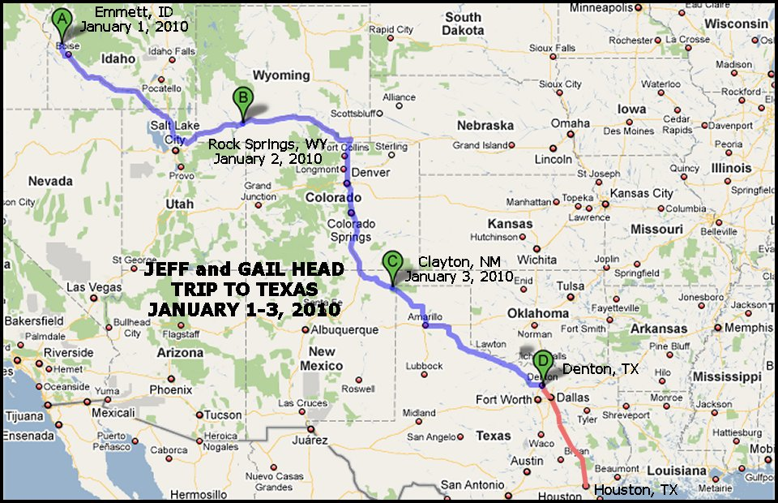 Today, January 4th, has been Gail's birthday and I wish so that I could have done more for her. She is an absolute angel to me, sent from Heaven, as evidenced by her patience & love towards me these last 32 years! I wish I had words that could adequately express my thanks, gratitude, and love to her and a merciful God who brought her into my life, but sice there aren't any adequate to the task, I pray that these, however inadequate,, along with my own actions will suffice in wishing her a happy birthday with all my heart! Today we also heard back from MD Anderson and the initial appointment is now set for next week. I was somewhat disappointed, but then realized that getting into this facility within three weeks of being diagnosed is a miracle and answer to prayer in and of itself, and am grateful for the opportunity. MD Anderson also indicated that they are trying to get me in earlier because of the pain I am experiencing. They hope to call us tomorrow with an earlier appointment, if posible, that could still get us there this week. The Tumor is obvious to me pretty much all the time now, and especially when I sit or lay down. The pain is strong. Both bone pain, and also neurological pain associated with nerves that are being impacted. The Percoset pain medications help completely with the bone pain, and take the edge of the nerve pain when absolutely necessary...though I do not like taking them. The trip was long, and I ended up doing the driving. I did not think I would, and Gail was more than ready to drive for me the whole way, but I found that driving took my mind off of the pain and allowed me to get here without taking pain meds...though the last couple of days here the pain has now increased again and I am taking them to get through the night and be able to sleep. Also, on the trip, Gail read me one of the Jane Austin, "Pride and Prejudice" offshoot novels, one about the entitre story from Darvy's perspective. it helped a lot too and was an interesting storoy. As I said, she is an angel for the which I am most grateful in my life next to my witness of Jesus Christ. Again, thanks to everyone for your faith and prayers, and for your responses to me by eamil, here on Facebook, on FreeReopublic where a marvelous prayer thread has been started, and by phone. It is humbling and words cannot adequately express my gratitude, or that of my family. Faith and sincere prayer have great, and real power. Power to the revealing of God's ill in our life...whatever that will may be. As I have stated, and reaffirm here, I have faith in God in Heaven and His son Jesus Christ. I know that they know me personally and have planned a life that is best for me, my loved ones, and those I come in contact with...indeed, for all people. It is ours to come to know them, to accept the gift of the atonement of our Savior which opens the door back to God, and to thus come to know their will for us in this life. And then, coming to know that will, to accept it, to make it our own, and then be a strong witness for them to all around us. I am committed to being a good witness of God's will in my life, whatever it may be, to those aorund me, my wife, my children, my grandchildren, my brothers, family, relatives, friends and neighbors. Her'es one of my favorite Hymns, "How Firm a Foundation:"
How firm a foundation, ye saints of the Lord,These sentiments and principles are critical to all of us as individuals, and they are also critical to us as a people and nation, and will help lead our nation back to its roots, its fundamental principled roots, and restore our Constitution and Republic. Here is an essay I wrote in that regard: Why America has prospered and is Free. To whatever extent I can help in that restoration effort, I am, and always have been committed. On facebook I am keeping a jourrnal/blog of this experience: HERE. For anyone not on facebook wishing to keep up with this experience in my life, I have created another site on the web: HERE, which, along with this FB site, I will keep up to date. The FreeRepublic prayer thread for myself and my family is located : HERE on FreeRepublic. Once again, God's choicest blessings and speed to all, and may your prayers, faith, and good wishes on my behalf be returned by Him to each of you and yours ten fold. Sincerely, and in Christ, Jeff PS: We also were able to watch the Fiesta Bowl tonight here at my brother's with Gail and I, Lee and his wife, Brenda, and one of Branda's sisters and her husband. Way to go Broncos! Helped generate some respect for the BSU football prgram and make some believers out of TCU fans here in my old stompin grounds.
We now have all the info for our appointment at MD Anderson. It is next Thursday, January 14th, at 8 AM. Our initial consultation will be with Dr. Araujo, a physician there who is in the Sarcoma department that deals specifically with these types of tumors. We will leave the Denton, Texas, area (and the wonderful hospitality of my brother Lee and his wife Brenda) Wednesday to take the 4-5 hour drive down there. We have been told to expect that that 1st meeting will be to inform us of MD Anderson's take on all of our current information including the clinical notes, the MRI, and the pathology from the biopsy which were all done in Idaho. Then, they will outline a series of tests that MD Anderson itself will want to do in order to further and more fully clarify the nature, location and size of the tumor. This will probably include more MRI and CT work. At the end of that process which we are told will take 5-7 days itself, depending on what they find, they will then develop a treatment plan and present the options for treatment to us. We are grateful to be able to have the opportunity to be treated at MD Anderson. The more we read and the more others talk to us who have either themselves been treated down there, or know others who have, the more we realize how blessed we are to be availed of the Doctors and facilities. I am anxious to get started. The pain is pretty strong and the neurological complications are mounting. I do not like to take the pain medication because of the way it makes me feel and its own complications, but am grateful to have them because as time goes on I find that those concerns are less and less consequenial than the effect of not taking them. Oh well, as I say, I am anxious to get the ball rolling. Gail is looking for and finding places for us to stay through the first week or so, and then for the longer term once they decide the course for the treatment. I cannot tell you how grateful I am for her compansionship, love, and comfort. I look back on the 32 years of our marriage and all we have experienced and shared together and I know that the good Lord and my Father in Heaven has blessed me in this regard beyond my capacity to receive or fully understand the blessing. Yet, I am grateful for the understanding I do have, and the ever growing knowledge (a growth that will extend into the eternities I am sure) of what that love means and how much of a reflection of our Savior's and Father's love it really is...and I am committed to more fully emulating it. We are both grateful beyond words for all of the help, kind words, wishes, and thoughts of all of our family, relatives and friends. Many of whom have contacted us on facebook, on FreeRepublic, elsewhere on the web, via email, phones, notes, even their own journals of their own history with various forms of cancer. All have been helpful, all have bouyed our hearts and spirits. Most especially we are grateful for faith and prayers and the power that is within them. A power to help us each more fully understand and know God's willl for us, to accept it and testify in faith of it to others. So, we are several days away from that first meeting at MD Anderson. Unless something develops between now and then, I expect my next entry in this journal/blog will be after we receive that intial consultation. Sincerely, and in Christ, Jeff
Well, we are on our way this morning to Houston. We have my first appointment tomorrow morning at 8 AM at MD Anderson which is a registration and orientation meeting, followed at 9 AM by a longer meeting with one of their sarcoma physicians. We then have another meeting at 2 PM. By the end of tomorrow, we should have a much better idea of what the immediate future holds, though we suppose they will let us know their thoughts and diagnosis based on the clinical, MRI, and pathological data from Idaho, followed by several days of their own tests, scans, etc. But we shall see and I will record it here, on my site, and on FreeRepublic. I also wanted to link to a wonderful journal from another Chordoma patient from some wonderful people up in the northeast (Jim and Nancny Forte) who have been going through a similar set of circumstances but are several montSo, having first obtained their permission, here is a link to it in Microsoft Word format. http://www.jeffhead.com/chordoma/LeapofFaith.doc It will open in Microsoft Word if you have that software on your computer. Thank you James and Nancy for contacting me, for sharing your information, for your faith and prayers, and for being willing to help us, fellow sorjourners, on our path. Also, we are finding several other doors and blessings opening for us that I will be able to discuss later once we are there. Surely the Lord God is showering us with blessings as a result of the faith and prayers of so many on our behalf. The least of which has not been my brother Lee and his wife Brenda. Thank you, Lee and Brenda, my wonderful older brother, from the bottom of our hearts for your generosity and graciousness...and more importantly, for your faith and prayers on our behalf as we were blessed and priveleged to stay with you in your home these last 10 days. For you, and for all who exercise faith and kindness on our behalf, I can only pray that the blessings be returned to you many fold from that same God in Heaven, and our Lord and Savior, Jesus Christ. Having witnessed first hand how He works, I know He will do so in His time. Sincerely, and in Christ, Jeff
We have spent our first day at MD Anderson here in Houston. What an unbelievably marvelous facility. It is a huge facility, that is surrounded by numerous other hospitals and medical facilities and is really a wonder of the blessing of knowledge and technology that God in Heaven has showered on His children in our time to help so many thousands and tens of thousands of people who are suffering. And there were thousands, literally thousands of people at MD Anderson who have come here from all over the world seeking the help aviailable here for cancers of all types, partiularly for rare cancers. We have gained more information on my condition, the specifics of it, and the road ahead. Sadly, for us, the news is not good. Dr. Araujo showed us the tumor in great detail from the MRI we had in Idaho. we had hoped that perhaps the tumor was still relatively small and could be removed from my sacrum with as little impact to the sturcture and nerves as possible. Alas, at this time, barring an out and miracle from God in Heaven (which I will not discount), it is not so. The tumor extends on both sides of the sacrum in many of the various frames which represent digital imaging from diferent levels through the sacrum. Only a few showed where the left side of the sacrum was all that was involved. In more than a majority of them, the sacrum was almost completely involved on both sides with only the far upper right "wing" not affected and invaded by the chordoma. This means that the surgery to remove it will involve a complete dissection, or removal of the sacrum. Vey, very major surgery that is very complicated and very dangerous with significant rehabilitation required afterwards. One of the first things Dr. Aruojo did for me on hearing of our experiences was to order new pain medication for me. She indicated that percoset was not strong enough to alleviate both the bone pain and neurological pain I was experiencing. I have to admit I had been experiencing some pretty strong pain. She now has me on morphine, both delayed, or long release pills, and immediate release pills as needed when it gets really bad. It was good news and very helpful in the sense that it helps with the pain...not so good news that it is necessary. But that's where I am at. Dr. Aruojo also indicated that as a medical oncologist, the necessaru surgery treatment would not be her specialty and that I needed a very experienced neuro-surgeon. She indicated that Dr. Laurence Rhines there at MD Anderson has seen my information and had requested that the case be transferred to him. This news is actually good, because he is recognized as a major leader, if not the foremost neuro-surgen and researcher in this type of cancer and surgical procedure in the world. We definitely want him and his team addressing the issue and are unbelievably blessed to be able to work with him. He is the precise person that my brother-in-law, Denni Woodmansee, who is a very experienced and high level PA at the veteran's adinistration, had recommended we see if at all possible three weeks ago when we were diagnosed. To me, coming down here from Idaho, is is a miracle that within three to four weeks we will be seeing one of the world's foremost neuro-surgeons in this type of procedure and I humbly and willing confess God's Hand in the road that led us here with so many people praying for us and being personally involved in helping us along that path. We will be meeting with him a week from today. I expect at that time, our understanding of the procedure itself, all of the risks, the ramification, and the road to recovery with its adherant rehabilitation will be more clear to us. Gail, my beloved and dear wife, companion, and best friend is helping in that regard. For those so interested, here are a couple of articles she has already researched about the surgery itself and the recovery and rehabilitation from it: Total Sacrectomy (sacral removal) and reconstruction process That article goes into detail about the procedure and includes the following step by step image of the reconstruction process (image A showing the sacrum itself before removal):
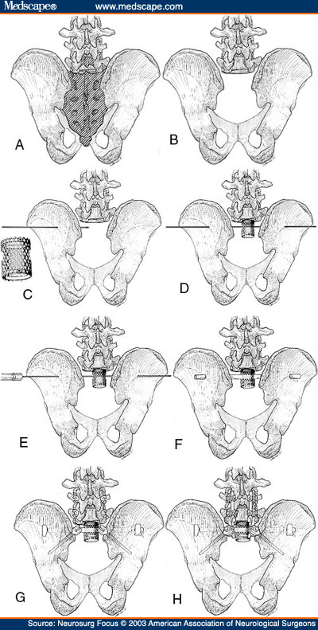 Artist's illustrations of the stepwise reconstruction of the lumbosacral junction. A: Dorsal view of the lumbosacropelvic junction. The hatched area will be resected. B: The sacrectomy is complete. C: A K-wire passes through the left ilium in the resected region of S-1. D: A K-wire passes through the cage and the right ilium. E: The reamer is passed over the guidewire. F: A 0.25-in titanium rod passes through the left ilium, the cage, and the right ilium. G: Lumbar pedicle screws, Farsi ilial screws, and the side-tighting bolts at either end of ilial rod are placed. H: Pedicle screws are attached to the ilial screws by using rods. This is the final stage of lumbopelvic fixation. Rehabilitation after total Sacrectomy For anyone (including us) wanting to understand the intricate, involved, and complex nature of this major surgery, these links are invaluable, and will help us in our decision process, and in understanding much more fully what Dr. Rhines will be telling us next week. So, since it is a week before we will be seeing Dr. Rhines...and then another week after that before we have our next tests and really start in the preparation of tretment, we have decided to travel back up to Denton between these visits. We spoke with Lee, and will stay at the property and ranch my Dad and Mom bought all those years ago when they wanted to move their boys ot to the country and where I spent my formative years just before and throughout my teen years. It is peaceful up there, and Gail and I will have a good place to think, pray, consider, and prepare. I look forward to walks in the country and fields of my youth in order to do this. Before I close for this entry, I have to personally thank a few more people. Certainly my dear wife who has been with me through every second of this. Who is supporting me, loving me, and helping me prepare for this coming challenge. She is an angel and I thank God in Heaven for her and His bringing us together those 32 years ago. Through my own experience in observing her with our family, with our children, with others, and with myself, I know of no one on this earth more uniquely qualified, more disposition oriented, or more willing to help me face this than her. And I know that was no accident. God in Heaven and our Savior havve foreknowledge of all of we face in lfie and have been preparing us for it these many years. I have to thank my children for their concern, their love, their advise, their support their care and their help through this to this point. I know today's news is not good news, but I also know and trust my God and my Savior and thier wisdom and planning of events and impacts that I cannot fathom or comprehend at this time, but will make themselves manifest in their time. So, in the end, I willingly submit myself to their will and know, with all my heart, despite the hardship, despite it not being what we wanted or hoped to hear, that it will all work for the good...for us and for many others as we live out our witness and testimony of their love in all things. I thank my brothers and their wives for their love and support. For standing for and with me...for giving me every help they possibly can through these times, and most importantly for their prayers and faith. I thank the members of my church...my Bishop and others who are assisting us and helping watch over my mom while we are away. For Jeff and Jolene who are doing this two and more times a week, driving out to Emmett and seeing her, comforting her, caring for her. This is true religion, the visit and care for the widows and fatherless. For friends near and far, who have heard of our situation and who are praying for us and exercising their faith on our behalf. I thank my co-workers at my job for their prayers and concern. Particularly for my my boss for his understanding, support, and his singular efforts to find good, productive work for me to accomplish remotely over the computer (my laptop in this case) whenever practicable and possible on this trip and therby helping to save more of my leave for future needs, which as you can see, will definitely be forthcoming. I must also specifically thank the Glass family, Kathy and Tom, for opening their home to us here in Houston and providing us a safe haven and for their prayers and faith on our behalf. They are American patriots, and they are fine people who are showing us their care in deed when we are in need...living out Christ's injunction to take others in. Heartfelt and sincere thanks to Stacie McDavid, for her reaching out to me as soon as she heard of these circumstances...from across the years and our graduation from Denton High School in 1974...and helping facilitate things for us here at MD Anderson through judicous and caring use of her own influence. For Cynthia Cofffman at MD Anderson, for responding to Stacie's call and personally coming down to our waiting lounge and introducing herself and acting as an additional advocate for us here. Indeed for all the medical personnel from Idaho to Houston who have been nothing but professional, personable, caring, and kind to us through this experience. God bless you each and every one for your commitment to your profession, to medicine, and to helping others. You are each involved in God's work of helping His children from all over this earth, and that service will not go unrewarded by He who sees all and knows the heart. I will write more next week after we have had our discussion with Dr. Rhines and know more. I expect we will go through 2-3 weeks of testing and other preparations and then develop a schedule for surgery. It may be anywhere from a couple of weeks to 8 or 10 weeks before we have surgery. we will just have to see how that works out. If it turns out to be a longer period of time we will travel back to Idaho to get as much work in and prepare for that experience and its aftermath rehabilitation, whatever it may entail. Again, thanks to all who are praying for us and exercising their faith on our behalf. As I have said before. my prayer is that our Father in Heaven and His Son, Jesus Christ, will return those blessings to you and yours ten fold. As always, sincerely, and in Christ, Jeff
Yesterday was an eventful day. We left the place west of Bolivar right at 6 AM and arrived in the Houston area, on the northwest side about 11:30 AM having traveled down I-35W through Ft. Worth, connecting to I-35 at Hillsboro, and then taking I-35 to Waco. At Waco we cut off on Highway 6 and drove down through Bryan and College Station, connected to US 290 at Hempstead, and then on into Houston. We got a Hotel off of 290 at FM 1960 and then proceeded to MD Anderson, arriving there about 12:30 PM. I had a CT Scan of my chest scheduled at 3 PM with a checkin at 2:30. We arrived at the CT Imaging Center at 2:30 and signed in, discovering they were running about 90 minutes behind. We had a really pleasent wait in their waiting area, and then I had my scan (where the inject iodine into your blood system for a contrast) about 4 PM. After this, we were done at MD Anderson until next week (Freiday, January 30th) when I get my MRI, which will be followed by the meeting with Dr. Rhines on MOnday February 1st. We then left MD Anderson and went to my Aunt Esther's house for dinner. She is the only surviving member of my mother's family outside of my Mom, who is in a rehab center up in Idaho while we are on this journey. We had a great time with her, a couple of my cousins (Joey and Cynthia) who ar two of Esther's children, and Joey's wife and Cynthia's daughter who were also there. We thank them for their love for us and their hospitality and the hard work they went through putting that very wonderful and tasty meal together for us. However, shortly into the meal, I began to feel extremely poorly and had to excuse myself to sit on their sofa. Very sick headache, lightheaded, and weakness feelings, with nausia. It increased to the point where I was on the verge of asking Gail to take me to the hospital. I almost keeled over a couple of times. But, then it lessened and we were able to finish our visit with our relatives and then come on back to the hotel last night...where I am sitting now writing this. Thankfully, I got a good night's rest. I do not know whether it was my morphine medication (which we had increased that day), some kind of reaction to the idodine (which I have never had before) or just a natural part of my condition. It seems to have passed now, but has left me weak, though my strength is coming back and I certai]nly feel much, much better than I did last night about 7 PM. Our plan now is to go back out to the house west of Sanger and Bolivar and continue to make that our base of operations until we go back to Houston for our next visit, leaving a week from tomorrow. The next visit, which will complete our new MRI and allow the Dr. to review it and this latest CT SCan, should be the meeting where we can decide more clearly on the treatment plan before us. We will keep everyone appraised through our Facebook sit, on the FreeRepublic prayer thread, and my own web site where I am keeping this jornal. (See the top of the blog for web URL addresses to all). Again, thanks to everyone for your prayers and faith on our behalf. We are grateful for them beyond our ability to express. As an example of what can happen in these instances, we were contacted by a relative who had related to a friend what was happening in our life. Their friend, concerned, sincerely asked what our relative felt about life after death and the existance of God. Our relative was provided with a wonderful opportunity to bear witness to their friend about our Father in Heaven and Jesus Christ and their plan for us and how our life's experiences, particularly in coming to know them, prepares us for that life hereafter, which is very real. Those opportunnities, and the impact they have not only on people's mortal outlook, but on their immortal souls are what is truly important in life. From our family, to our friends, neighbors, co-workers, and other acquaintences, we get such opportunities probably more than we know. Therefore the importance of not only availing ourselves of those opportunities, but providing an environment of freedom and liberty where we are free to do so. As anyone who is familiar with me is aware, I have tried, in my own way, to commit my life to both. We pray God's wonderful blessings in this regard on all who may read of our experiences with my Sacral Chordoma bone cancer, of our feelings about our wonderful and beloved Republic here in these UNited States, and most importantly, of our own commitment to our Father in Heaven and His Son, Jesus Christ, and their will in our life. Sincerely, Jeff
Sorry it as taken a while to update this. There have been a number of developments. However, I have also been quite sick and was unable, literally to update the internet as a result of that sickness like I would have liked. After the CT Scan last week, and my illness that evening at eating, I never really got any better. Became very nausious very easily and had to lay down for long bouts for it to go away. Also very light headed and fatigued. We did get a call the next day, telling us that the MRI had been moved up and sceduled for the next Friday, January 23rd (which was a week early) two days away, so off back to Houston we went. We drove down there that morning, Gail driving the whole way and me trying to be comfortable. They were an hour and a half behind on the MRI's. but got us in around 6 PM and then about 7:30 we started back. I took an extra morphine pill so I could lie down for the MRI the whole time I was "in the tube". We then drove back to Sanger that night and arrived after midnight. I felt really bad, but was abe to sleep after getting home and felt a little better...but spent pretty much the the entire weekend in bed. Then, on Tuesday of this week we drove off again, and stopped in Bryan, Texas and spent the night. We drove on into Hoston the next morning for my meting with the medical oncologists, Dr. Arujo. I was so sick by the time we got in there I really do not remember much of the interview. Thank God in Heaven for Gail, who took good notes. The Dr.s were very concerned about my immediate health , but also reviewed the results of the CT and MRI. They then immediately took me off of the morphine, deciding I was not reacting well to the constant amount in my blood. They gave me some anti-nausia pills, put me on a Fentanyl patch, with some break through meds. This has seemed to help. We stayed the night that mnight right down the street from the MD Anderson Medical Center in the Holiday Inn. They made us a great deal on an entire suite when they were informed of my condition, so I could be close enough to get the meds changed if necessary. This morning we came home and this evening I am feeling much better...though not by any means all the way there. Still getting morphine out of mybsystem and the fentanyl has its own side effects. As to my cancer, the news on the CT scan of the lungs was good. No spreading to the lungs. The news on the pelvis MRI was not as good. Several of the spots there from the 1st MRI are definitely not cancer, but one spot, on my right Ilium, defintiely is cancer, so there was already spreading before we ever left Idaho. We now meet with the neurosurgeon, Dr. Rhines, on Monday morning, February 1st, to discuss our options, which will definitley include considering the major, life-altering surgery to remove my sacrum (and now this other area on my hip) as probably the best chance to actutally treat the cancer and remain non-palliative regarding it. There is also, in addition to the prroton radiation, some carbon ion radial therapy that may help with the surgery. We shall just have to find out. we are blessed to be meeting with one of the absolute world experts on this cancer, in one of the best places on earth to get it treated. We continue to thank everyone for their prayers and faith on our behalf. I cannot tell you how much steength and help they have been...particularly the last 10 days when I have felt so miserable, wondering at times if I was not near death. God bless you each and my prayer continues that he will return the blessings on each of you many fold. Sincerely, and in Christ, Jeff
Well, today was the eventful and much anticpated day when we finally had the opportunity to sit down and talk with Dr. Rhines at MD Anderson, a very well-known and reputable neurosurgeaon, the Director of the Spine Program at MD Anderson, and one of the world's experts on Chordomas. We went in at 8:30 AM arriving earlier and signed in. We had been forewarned that it may be several hours before he could see us because of his schedule and many responsibilities. But, about (9;00 we were called back and by abpot 9:20 Dr. Rhines was visiting with us, along with his RN and Advanced Practice Nurse, Gisela. She had come in a few minutes before and was going through my history when Dr. Rhines came in. They were both extremely professional, extremely knowledgable, very articulate, and very personable. Dr. Rhinese reviewed my history with me and then gave us an in-depth explanation of chordomas and my specific case whiile covering all of the various alternatives. He at one point early on indicated he knowe that we had probably been out on the web and could probably c\even perhaps lecture him on my condition, but if we would let him go through his presntation, it would probably answer the bulk of our questions. And it did. The only realy departure in terms of questions that I had was concerning Carbon Ion Radiation (CIR) treatment that has been developed and used in Japan and now Germany that shows some promise of avoiding surgery. I'll go into that later, but Dr. Rhines, very graciously indicated he would contact and talk about my case specifically with associates he had in Japan and ask what they thought. That method is not approved for use in America, so as far as what Dr. Rhines can do, the surgery which techniques he is very experienced with and an expert at is the method we are heading towards. I accept this. For me, evn though there are already a couple of small cancer points that have cropped up on my hip (which means there is a stronger chance that it is already spreading elsewhere, the surgery provides the best opportunity to prevent further spread from the primary site, and to avoid the primary site ultimatly destroying my sacrum and spreading to other nerve endings and debilitating me to a much more sever extent. I cannot tell you how appreciative Gail and I were of Dr. Rhine's open and forthright manner, his willingness to listen to our concern and questions and address them, and his and Gisela's attitude towards us and our circumstance. He spent over two hours with us and when we had discussed it all, we agreed that he would contact us next week with the results of his own activities (including contacting Japan) and make a final decision to go forward with the surgery, which he indicated would follow about 3 weeks after that. So, barring some miracle regarding CIR from Japan, it looks like we will be going through the surgery in Houston sometime early in March. That will entail very major surgery which is itself life-threatening. He believes that because of my health history, no-smoking, no-drinking, no major problems, my strenth, etc., that in his professional opinion I will come through the surgery and avoid infection...though he was sure to point out there can be no guarantee. Then, there are four weeks after surgery in the hopsital going through recovery and rehab. For ten days you cannot lift your self, sit, stand, or get out of bed while the new "hardware" fuses and heals to your body. Then they teach you how to begin to move, roll over, sit back up, and ultimately get up and walk over the next 15-20 days...as well as how to handle your own bodily functions in terms of bowels and bladder that will be imparied as a reult of the surgery. One good point there...at MD Anderson they do not by default perform a colostomy or create a permanent catheter. All of your plumbing is there, you are just numb, and they give you rehab to teach you how to self catheter and yourself get your colon to empty its contents. With the colon it involves a dietary regiment that regulates you and creates a consistancy that is compatable with doing this. That going to be a lot more healthy diet anyway...and I like this approach. Probably more detail than you wanted, eh? After four weeks, you are released but then, in all liklihood remain around MD Anderson for another four weeks while proton radiation is applied to the area of the operation. 40+ treatments over four weeks. After that you go home, but then, the Dr. made sure to point out that most patients require another four weeks of transition from home and their new life-style, back to work. That, is the path we are on. One aside. during the conversation I indicated to the Dr. that I had what might be a personal question for him. I indicated that since he would undoubtedly through this process get to know me personally, inside and out, and particularly anatomically, better than almost anyone I know, I had a question for him. He told me to go ahead and so I asked him if he was a man of faith who believed in God. He said he was. I indicated I didn't mean to offend, but just as he had indicated to us that our positive mental attitude would be critical in getting through the surgery and the rehabilitiation, that our joint positive faith in God, when exercised by believers together, both those praying for those in harm's way and for those put there to help them, that faith works best when we are united in it. I told him there were hundreds not only praying for me, but for him too, as my Dr. and I wanted him to know it, and join with us in our faith in God's will. He thanked me. I asked him if he had heard of of Aninias (of Damascus) in the Bible. He was not familiar with the story. I told him that in the New Testament one of God's servants (in this case Paul) was sent to Aninias (and Aninias to him) to find what it was he (Paul) was to do. And Aninias gave him the direction. Aninias was respected, knowledgeable in the things of God and wise and Paul did as he said (and oh yes, Paul's sight was also restored in the process). I indicated that I do not want to imply that I, Jeff Head, in any way am like that servant of God, or that he, Dr. Rhines was Aninias other than that I had faith that God in Heaven had led my footsteps to Dr. Rhines for whatever reason, and that I needed to listen to him as regards this medical circumstance. He, Dr. Rhines is very well respected. He is very knowledgable, and that he is also a man of faith...and that was my faith and thoughts on the matter. He again thanked me. As to the CIR treatment in Japan...it shows very good signs of great results with non-surgical treatment of this cancer that is not only successful in killing the tumor, but also very good at avoiding any furhter neurological side effect to the bowels, bladder, etc. Problem is, it is in Japan (and also Germany) and has not been approved in the USA and so is not covered by insurance...and the US community does not feel there is a large enough body of data to indicate it is the way to go yet and that we should be more cautious. Based on what I have read, if I had that type of money available, I would consider spending it to try and pay for such treatment in the hopes it would work as it has for many people in those countries since 1997. If it did...great! If not, I feel that soon enough thereafter, I would proceed with the regiment here in America. But I would not sacrifice the opportunity at MD Anderson to pursue this either. Dr. Rhines is going to share my data with his compatriotis, and if the door is opened to do such a thing, we will consider it then. We are going to go to a meeting Dr. Rhines is holding on Wednesday which is a seminar on what to expect for this type of surgery and how to prepare for and handle it. Then, we will head back to Denton, TX and Sanger, TX to gather our things, visit Lee and his family, and then on Friday head back home to Idaho. My pain meds are working much better, though still being adjusted. I hope to minimize the side-effects of the patch and maximize the pain control through to surgery at this point. A week from now we will make the final decision, and quite likely then, three weeks later based on what Dr. Rhines schedules, we will be back in Houston early in March for this suregry. If there is more info, I will update on wednesday. Pardon this long update...but I know many people have been waiting. Again, thanks to all for your faith and prayers on our behalf, The Lord's Hand is in this and His love and support are with us, and we thank all who have prayed that it be such to this opoint, because those prayers are being answered. Sincerely, in love and in Christ, Jeff
We spoke to Dr. Rhine's advanced practice nurse, Gisela, last night. She indicated that my Chordoma was not able to be presented to the MD Anderson sarcoma tumor board on Thursday, Dr. Rhine's had to be in surgery all that day, and that it would be presented on Tuesday. He will call us a couple of days later as a result, with our schedule for March, looking for a decision to go ahead. She took quite a bit of time with us (it was after 8 PM her time) and answered our questions and gave us very good information. We were very appreciative of it. We are now back home in Idaho. Drove through some pretty good snow in Kansas as we tried to skirt the big storm to the north that started in New Mexico, moved across the Texas Panhandle (where we would have driven straight through it if we had gone our normal route) and is now pounding the mid-Atlantic and Washington, DC. We ran into som more snow on the boarder of Idaho and Utah. But it was only fifty or so miles and not too bad. Here's a map of the tript home:
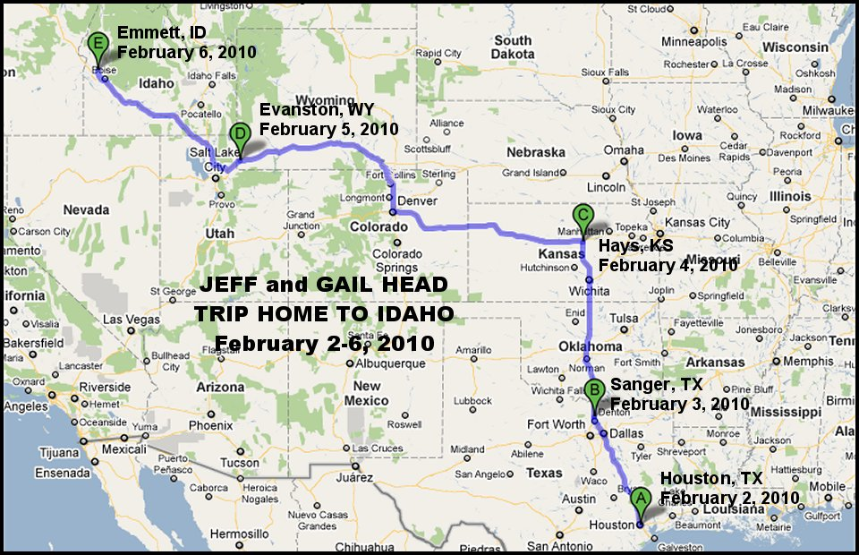 Arriving home, I was led to exclaim: "'tis good to be home...even for a few weeks!" A scripture from the Nw Testament came to mind. Direction the Lord gave to an individual He had healed: "Go home to thy friends, and tell them how great things the Lord hath done for thee, and hath had compassion on thee." Luke 5:19 The Lord has truly been good to us in this set of circumstances and has guided our footsteps. We have felt His love and guidance, and the love and faith of our friends. Despite whatever hardship, that knowledge and feeling is pricelsss, now and for the eternities. And now, we have a short respite. A time to prepare, get things in order, and visit woth our family and friends. At home, someone put a large banner on the front of our house that says, "Welcome home. We love you!" Thank you, good souls, whomever did that. It has warmed our heart and gives us all the more strength to prepare for the upcoming, major surgery and the life style changes and impact it will bring. We are grateful for the chance to have the procedure available to address this rare cancer, in spite of those hardships. We are still examining the Carbon Ion Radiation treatment being done in Japan and also Germany we found. The two issues it presents...in spite of the fact that their data shows that it has every possibility of being equally effective to surgery without the disabilities thereafter, are these: 1) The US has not approved it and so our insurance (which is very good) would not cover it. The cost of the procedure and everything associated with it would have to born from our retirement savings and any other means we could pull together. I am committed to providing for my wife and family in any event I may face, so I am very relcutant to comnsider it given the risks in any event. 2) It is not clear to me how long it takes after the CIR treatment for the medical community to know that the irradiated tumor is incapable of any further spreading. In my case, there has already been spreading, so statistically I am behind that eight ball anyway. I know a tumor that has been removed (if they get it all) cannot itself spread any more. I am not so sure about an CIR treated tumor which begins to slowly regress after treatment. On one side if we tried it and it did not work, then we could move towards surgery anyway. On the other, since mine has already spread, time is of the essence to catch it before it spreads to any organs. Thus far, it has only spread in two small places to bone...which is very slow to grow and spread like the original tumor. So, those are the types of decisions we are faced with. I will speak more of it with the Dr. when he calls later this week. My own thoughts at this time are, that given the risks, it is most likely we will proceed with the surgery at the earliest date, barring some miracle regarding the CIR. Again, our eternal and continuing thanks to all of those who are praying for us and exercising their faith and love on our behalf. I have felt the strength it brings in very trying hours. I also must say, that next to the guidance and direction and love of my Savior and my Father in Heaven, I must hold up and thank my dear wife, Gail, for her help, comfort, strength, and love and faith through this. She has been and remains an angel to me and I thank God in Heaven for her as my wife, my friend, my sweetheart, and the mother of my children and grandmother of our grandkids. After hoping, praying, and wishing to see each of them following their Savior and partake of His Atonement, I could wish no greater blessing on my daughters and grand-daughters than that they seek to emmulate her...or wish no greater blessing on my sons and grandsons than that find and have a woman like her for their own wife and eternal companion. I pray that my expression of these feelings does not embarass anyone, or are not thought improper or inappropriate. It's just, that at times like these, times that sooner or later we all must face to one degree or another, as a husband, as a father, and as a grandfather, I cannot forebear. Sincerely, and in Christ, Jeff
Well, I wish I did not have to write this update, but the situation is as it is and I need to document it. I had been waiting a few days to write it, hoping that the news might improve, but it does not appear to be going to do so. We were informed earlier in the week from MD Anderson, by the Advanced Practice Nurse for Dr. Rhines that the tumor board had raised issues and boardered on the consensus that the surgery would not benefit me. This is a significant departue from what we were preparing for. The essense of that message is that many on the board feel it is too late for the surgery. Since the cancer has already spread to my illium, the feeling is that it has already started metestizing into a more aggressive form which is precisely what the major surgery is meant to prevent. My feeling and hope was that since it had not spread to any organs or soft tissue, that the spread to the bone could be controlled. But these individuals are the professionals who do this for a living and who have seen and dealt with many, many such cases. I have to respect what they are saying, knowing it is not the message they want to deliver either. So, we are now waiting to see what other options (including palliative which is a treatment regiment that is geared towards trying to slow furute spread and make me as comfortable as possible) for treatment are available. There is a chance that the surery could still be done, but it appears remote at this point. In addition, I now intend to personally go all out (as I feel up to it) to trying to contact Japan and Germany about the Carbon Ion Radiation tretment they have developed and are using. I also want to present to MD Anderson the idea to use me as a research project. I am an individual with a sacral chordoma that they do not feel the principle US treatment of resection can benefit. I have had no other direct treatment. What better subject for a baseline than that to send over and try the Carbon Ion Radiation treatment that the Japanese and Germans are using that is not yet approved here in America? I know these institutions in the US are aware of it, and it is certainly not a "lark" or "quack" treatment since the accelerators used in Japan and Germany (each nation now has two of them) cost well over 200 million dollars each. So, those appear to be my choices at this point. We hope to be in further contatc with MD Anderson next week. In the mean time I have been back at work and will continue to do so as long as I can and according to whatever treatment plan they now come up with. Added to this, I had my Fentnayl patches increased this last week on Wednesday to 37 mgr per hour. On Friday I was very sick and so decided to go back to 25 mgr per hour (simply by not adding the 2nd patch Friday night when I was due for a change). This morning I feel a little better, but am still very fatigued, weak, short of breath, and a little sick. Again, thanks so much to all who are exerting their faith on our behalf and praying for us. Those prayers and that faith mean more than I can say...on a very real and daily basis. Thank you! This is, and always has been, in the good Lord's Hands. I will write again as I can. Sincerely and in Christ, Jeff
What a difference a few days can make...along with a few answers to prayer. Yesterday I received a call from Dr. Rhines first thing in the morning. He spent about an hour on the phone with me detailing all that he had been doing these last four weeks. Although I had heard from his office and Advanced Practice Nurse, Gisela, on several occasions, where lots of good info had been communicated, this was the first time Dr. Rhines and I had spoken directly since we met him for the long 2+ hour meeting in Houston. He apologized for the delay, indicating that he had been out of town and had contacted a lot of people about me and my case and that he did not want to have such a conversation on his cell phone while traveling. I thanked him for calling and indicated that there was no need for apology. He was very busy, and in addition to his research and being the head of his department at MD Anderson, he has many patients, all of whom have difficulties and are in at least as dire straits as I. Anyhow, the jest was that despite the feelings of many people (Drs) he had spoken with regarding my case over the fact that my tumor has already spread to my Ilium from my sacrum and could mean that it was too late for the type of surgery necessary to remove the principle tumor...concerns that he shares...that he had determined that there are still two options for treatment I should consider and make a decision on. The first choice remains the major surgery to take my sacrum that has been described in detail on this journal in the past. The down side of this decision would be if the cancer has already spread to soft tissue and organs, than I will go through a very difficult and painful surgical procedure (what he termed as "big as it gets"), and long recovery procedure with no lasting benefit (that is, if we discovered soon thereafter that the cancer had in fact already spread). The upside of this surgery is that it is the only medical path available in the US to potentially cure my condition, if the cancer has not spread to those other areas yet. Has it spread? The Dr. indicated that at this stage we just don't know. They cannot see it. The pathology indicates it may not have...but since there are those two other small spots in bone material, they cannot rule it out. The second option is to treat the sacrum and the entire tumor with proton radiation upfront. This will not kill or completely stop it...but it would retard it and slow it down. Then wait 6-9 months and take a look again. If the cancer is not spreading to the other areas, then do the surgery at that point with a better feeling that it has not and is not about to spread. The downside of this choice is that if it has not already spread, we add 6-9 months of time where it would have the additional opportunity to do so. The upside is that this method would preserve my neurological function (bowel and bladder) for a longer period and not have me undergo that painful, difficult major surgery that would take those functions if the cancer had indeed already spread. My own view is that the first option is the decision we in essence already made and that it is the only option that is directed immediately towards a potential curative solution (even if the odds are not great) that is available. The second option is already starting down the palliative path and almost presumes that the cancer has spread and that the hope for a curative treatment is past. We are going to pray about this and decide within the next day which way to go. We ask for your thoughts and prayers on our behalf and thank you all, from the bottom of our hearts for your acts of faith and prayer to date. They have most certainly helped and given us additional strength to face this difficulty. In conjunction with this, let me share a faith promoting experience associated with events leading up to the call. In our faith, we believe that Jesus Christ remains a God of miracles, both body and soul. We believe in administering to the sick and afflicted. This last weekend I was pretty sick trying to get back into "sync" with my pain meds as I explained in the last entry. In the midst of that, I was also low in spirits because of the news from last week that so many Drs were thinking that my condition did not warrant surgery and may be too late for that. On Sunday, at the suggestion of my wife and friends, I asked to be administered to and blessed by priesthood holders in our church. It is a "lay" priesthood, but we believe through faith that we can call on God, in Jesus Christ name, for the help, strength, and even healing we need, according to His will. Two brethren came over, one what we call our "home teacher". In our faith we have two men and two women who are assigned to several families within our congregation to minister to their needs as best they can. All families and individuals are covered. I myself have several families that I try and help. Anyhow, I was anointed with oil, hands were laid on my head, and in the name of Jesus Christ I received a blessing. It was in the quiet and peace of our home. It was not dramatic, loud, or earth shattering. I was not told to rise up and walk that I had been cured (though with God in Heaven, that is certainly possible). Words of comfort were spoken to me. That through my faith I would see the path ahead. Very specifically, I was told that my Dr. would contact me and give me the details I needed to make the right decisions according to God's will. At that point, I had not heard from Dr. Rhines in 4 weeks, and based on the info coming to us, I did not necessarily expect to hear from him. I figured that since so many were thinking this was too late for surgery that I would be referred back to a medical oncologist for palliative treatment to make me comfortable and try and fight the cancer once it did spread. I was wrong. Dr. Rhines had been working hard the whole time on my account, doing research, gathering info, talking to Drs all over the country and world, and was gathering information so he and Gail and I could make the most informed and best decision possible. The Lord honored that blessing. The next day after my blessing, at the earliest hour possible while at work, Dr. Rhines called and did exactly what I had been told he would do. Now, God in Heaven knew that was going to happen. He knows Dr. Rhines heart just like He knows all of us. He simply let that act of faith communicate it to me and help comfort me at a time this weekend when I needed it. Now, I cannot say where this leads at this point, other than to know that God in Heaven's hand is in it and it will work towards His will. I pray I can stay strong and be a good witness of His will, whatever it holds for me. I know God in Heaven and His Son Jesus Christ are aware of each of us and our needs, and I know they will make known to us that concern and love as we seek them out. That doesn't mean things will be easy...or everything solved exactly as we would desire at that moment. it does mean that things and events will work out according to His will and what is in the long term best interests for us and our loved ones. This is a life-threatening, very difficult disease and time in my life. The pain is still there. Anxiety is still there. The upcoming surgery, should we in fact choose that route, will be as difficult and painful physically as anything I have experienced in life. The surgery itself or infection afterwards could take my life. In the end, the surgery offers medical hope. But whether that hope turns into the reality of a long term cure or not, the Hope of Life Eternal through Christ Jesus will stand through any malady, disease, hardship, or difficulty. It is up to us to accept His gift in our life, and His name in our heart, and then stand firm and true to that decision as it changes our life and the way we live it. May His will be done in each of our life's and may we each seek to know, understand, and accept that will and then witness to one another and others in an effort to strengthen and help those around us. I will make an entry in the journal tomorrow or the next day as soon as we make our decision and inform Dr. Rhines and MD Anderson. Either option will see us back in Houston towards the end of March to start the respective treatment. As a side note. Dr. Rhines did look deeper into the Carbon Ion Radiation treatment being conducted in Japan and Germany. He indicated that with the massive amounts of radiation that they can deliver so accurately that there is great hope with that procedure. He also indicated that since my tumor has already surrounded several nerve roots critical to my bowel and bladder function, that in order to treat the entire tumor, that radiation would almost certainly destroy those nerve roots as surely as if he cut them out. The upside then would be that I could undergo that with no major incisions and the difficulty and recovery major surgery brings. The downsides are pretty significant. In addition to its cost and my US insurance not covering it, there is not enough data to say that if that treatment were conducted, that while the tumor stopped growing and slowly regressed, that it could not spread afterwards...which is a big risk to take after the fact. The best chance for keeping it from spreading...if it hasn't already done so in which case neither surgery nor CIR will work anyway...is to remove the tumor. And now, that door, which I had thought was closed, is open again for us to consider. Sincerely and with love in Christ, Jeff Head
Well, we talked to a lot of family and friends, studied it out, spoke to each other at length, and prayed to our Father in Heaven and have made our decision and communicated it to Dr. Rhines and MD ANderson. We will be doing the surgery, probably the third or fourth week in March. As I wrote to Dr. Rhines, "Simply stated, despite the risks, and based upon what we know at this point, surgery remains the best chance for any curative outcome for my condition, and, barring a cure, the option that gives the best chance to maximize prolonged life.It will be a huge, difficult procedure, with a very difficult and protracted recovery and rehabilitation. If that goes alright, then we will have th best chance of avoiding recurrance...even though there is a risk it has already moved. But that is in God's hands...indeed all of it is and always has been. He knows what is best...we can but do our best and seek to understand and conform ourselves to His will, knowing of His matchless love and that of His Son, our Savior, Jesus Christ, for each of us. I'll share just a quick experience that helped me in this decision. On Sunday, before I had received the blessing I mentioned in the last update, my dear wife Gail read me a story out of one of our Church magazines, the New Era. It was about a young teenage girl who discovered she had a severe case of scoliosis, or abnormal curvature of the spine. She was at a level three and would require surgery...but worked with Dr.s to try and use braces and other procedures to reduce it to level two and avoid the surgery. She had a strong faith and relationship with God, and her Savior. She felt if she followed Him, obeyed His commandments, treated others with His love, and lived a Christ-like life that He would bless her with a miracle and be healed. At every turn she faced disappointment. The curvature kept getting worse. The brace hurt terribly. She received a blessing and felt that the Lord would work a miracle in her life, this young teenage girl, through her faith. They chose another Dr. and the results through xray were the same...even worse. The Dr. asked her if she had expected a miracle in this imagery and she said she did. She was disappointed but yet full of faith. Then the Dr. said to her, "the surgery is the miracle." She immediately felt the Holy Spirit inspire her that in fact, the God in Heaven could use others and work the miracle through them and the knowledge He had endowed upon mankind. I remember, when Gail read that to me, and based on the discouraging news I had received earlier in the week, that that particular type of miracle had passed me by...and I voiced it to Gail, saying, "that miracle is one that apparently is not open to me any longer." The girl went ahead and had her major spinal surgery, and though the path was hard, she overcame the condition. Her story closed by saying, "Surgery may not have been the miracle I was expecting, or even hoping for, but it was the one I needed. It was the one I learned the most from. Word's can't describe the pain, the heartache, or the daily challenges. Most of all words can't describe the closeness I felt to my Savior. Thinking of my Savior is what got me through my hardship."Those words touched my heart. Now, I do not know if this surgery will "cure" me physically. I do know, that the Lord answered our prayer and according to the blessing I received, the Dr. called the next day and opened that door back up to me. I know, according to His will, that this is the path I need to take. It is the one He has marked out for me according to His grand design...the one I will learn the most from and draw nearest to Him through...and the one that He will use to touch the hearts of many others through, and bring them to Him and His Son. My soul has already been cured through my Savior. My body is His instrument. I will follow Him, do His will, and try and be the best witness for His will, for His love, and for His good in my life on the path He has set me on. Again, thanks to all...so many hundreds...even thousands of people who continue to pray and exert faithand love on behalf of me and my family. It is one of the most humbling experiences I have ever had and I thank you each from the bottom of my heart for it. Words cannot express adequately the thanks I feel, or the help it has already been. I will continue to update as long as I can as we prepare, and particularly once we have specific dates. I will ask one of my children or other family member to keep this update going once I go into the hospital. Sincerely, In Christ, Jesus, Jeff
There have been a few developments in the last couple of days I wanted to mention for family and friends who are keping up with our progress and experiences with mthe chordoma bone cancer in my sacrum, 1st, MD Anderson completed a batch of paperwork that has enabled me to become eligible for a leave share program where I work. Let me say a couple of things about where I work. I work for the U.S. Bureau of Reclamation in the western United States. The BOR is an agency in the Deparement of the Interior. We deal with the large dams and reservoirs in the western United States. Specifically, I work with elctronics and communications that allow the dams to operate and deliver the much needed irrigation water, water storage, and hydro-electric power we derive from them. I am very proud of this work and take it seriously. The people I work with are producers who help produce much needed water and electricity for our nation. Anyhow, the Department of Interior (and the federal government in general) has a leave share program where any emplyee facing a major health crisis can qualify for leave share from other employees. In my case, the surgery, the time in the hospital, the radiation treatmnt, and then the rehab are going to utilize much more time than I have available on my own, and this program allows other employees, if they so desire, to share a few hours with me and help me get through. Here's the wording of the announcement that went out to our Agency regaring me: "Subject: Active Leave Transfer RecipientThis allows employees to share leave with other employees who are in need. It is a humbling thing, not one I would have ever sought out, to seek help in this manner. But for the sake and welfare of my wife and family, I have to humble myself and do so. If there are any employees of the Department of the Interior reading this, and particularly if you envision yourself being in a "Use it or lose it" situation toward the end of this year, then any consideration, even just a few hours, in leave sharing that you would have towards me would be appreciated beyond my ability to express. God bless each and everyone for even considering it. Here is a link to the OPM-630A form you would need to fill out and mail in:
In Agency (Department of Interior) Leave Transfer Form If there are employees of other agencies of the Federal Government reading this (meaning outside of the Department of the Interior) and particularly if you envision yourself being in a "Use it or lose it" situation toward the end of this year, then any consideration, even just a few hours, in leave sharing that you would have towards me would also be appreciated beyond my ability to express. Again, God bless each and everyone for even considering it. Here is a link to the OPM-630B form you would need to fill out and mail in (making sure to provide the contact point within your agency requested at the bottom of the form):
Outside of Agency (outsied of the Department of Interior) Leave Transfer Form Again, the address to send those filled out forms to is: U.S. Bureau of ReclamationI can only use this leave for my medical emergency, and it can only last for the duration of the emergency (which currently runs, barring any complications, through the end of my rehabilitation period). So, that is one of the major happenings and considerations I am facing. Another was the news that the MD Anderson team is going to split my surgery into two procedures, which will occur a few days apart. We still do not have a specific date, but it appears likely that it will start either the last week of this month (March 2010) or the first week of April 2010. The first procedure will involve an entry from the front and will prepare internal organs, vessels, nerves, initial bone cuts, and retrieving some soft tissue from the abdomen wall to be used to reconstruct the sacral area during the second procedure. The second procedure will involve entry from the back and is for removal of my sacrum (and the tumor) and reconstruction for spinal stabilization. Both are daunting. I must say, that I am not "looking forward" to it, but now knowing what the treatment path is, I am nonetheless anxious to be about it and get started. If they called me tomorrow and indicated they needed me there next MOnday, I would most certainly do so. Waiting and dealing with the pain meds and their side effects take their toll. Mornings are pretty difficult most days, but I improve as the day goes on. Being able to get to work each day and having my mind engaged on those endeavors also helps a lot. Also, based on Gail's suggestion, I have found that if I eat a little bit throughout the day, as opposed to three major meals, that it also helps how I feel. Sort of like having five or six "mini-meals", one every 2-3 hours or so. Now, I know that what I will have to deal with as a result of the major surgeries and rehab will be worse than what I am dealing with now. But I also know that, that is the path that lays before me, and that offers, from the medical community perspective, the chance for survival and as much disease free life as possible. As such, it is the path I am ready to put my foot to as soon as possible. Again, I want to express my thanks...my undieing thanks to every one who has offered a prayer on my behalf or that of my family, a kind word of encouragement, or who has exercised their faith in God and His Son Jesus Christ on my behalf and that of my family. I cannot express my gratitude and feeling in mere words...but I can tell you that every bit of it helps. I also continually pray that God in Heaven and His Son will return those kindnesses and blessings to all of those who express them many fold. Sincerely and in Christ, Jeff Head
Well, we are now zeroing in on a date (or dates) for my surgery and the schedule associated wth it. Dr. Rhines and the other surgeons have definitely decided it will be split into two surgeries and the preliminary dates are April 27th and April 30th. That's several weeks later than we had anticipated, but since the surgery is going to occur in two parts and since several of the surgeons needed to be available for both dates, it made scheduling more diffiicult. These individuals are the professionals at what they do, and they are the experts in this form of cancer and surgery. As I stated early on, the good Lord has guided me to them in my circumstance and need, and I will trust their professional judgement and opinions. So, we are now planning to leave Idaho sometime late in the week of April 5th, probably the 9th or so. Dr. Rhines wants us down there about 10 days before surgery. We will meet individually with each of the surgical teams and in addition to answering our questions, there is going to be a lot of prep and training for me in preparation for the surgery and the aftermath. In addition, they are planning to conudct more MRIs, CTR Scans, and other tests before surgery. One thing we have also decided is to get a corporate/medical type apartment near MD Anderson. We will probably be in there 3 or more months. Given the amount of time Gail will spend at the hospital to begin with, givent he amount of time in rehab and radiation after surgery and they types of treatment and what it will take for me, we have decided that this will be best. I need to be close, and I need to be in a position, if I can, where Gail can help me and we can do it with as little impact to our riends and loved ones as possible...while being very close to the hospital and the Dr., particularly for the first several weeks out of the hospital. It is going to be expensive, but we are going to just have to tap our resources to make it happen. We looked at a number of places on line and looked at comments from other MD Anderson and other medical patients who stayed at the various places. One thing is clear...in that area, and with my type of circumstance we are going to want a gated community with very good security (I read of several people who were not in gated communities with good security who were actually held up near their apartments...patients to the various medical centers and I just cannot have that to worry about while I am in the hospital and Gail is coming and going). So, these are some more of the decisions we are making in preparation for my 3-4 momnth stay in Houston for surgery, recovery, rehab, and radiation treatments. I must humbly thank...with gratitude again beyond my ability to express in words, all of those who are sharing leave with me, from my own agency (the Bureau of Reclamation) and from other agencies, to help us through this next period. it is a literal blessing from above as folks share as He would share...from the heart. I simply cannot express our gratitude adequately, but I can thank each individual from the bottom of my heart, and pray God in Heaven's richest blessings on each and every one, through His Son Jesus Christ. I can only strive to help otjhers as I have been helped...which is exactly what the gospel of Jesus Christ is all about, because all of us have been helped by Him beyond our ability to repay...except in service to Him and His children as He would do. Also, continued thanks in exactly the same manner for all of those who are exercising their faith in God on our behalf through prayer, blessings, kindness, encouragement and love towards Gail and I and our family. Again, God bless each and every one of you as well. Once these dates are finalized I will update every one again. On Friday I upped my Fantanyl pain meds to 37 mg/hr. I was concerned and anxious because last time I tried to go there, I got pretty sick. My brother-in-law, my local Dr., as well as Dr. Rhine's nurse Gisela, indicated that I may do better this time because my body had aclimated to the med. In addition, I have learned a LOT since then on how to eat and my own life style with the meds. The outcome was that I was able to do so without any significant impact. That is an anwer to prayer. I am able to continue working and preparing and I am grateful for that. Our journey continues. The pciture and path ahead into the surgery and the general impact (if all goes well) is much clearer now. We will go forward with faith, putting it in the hands of these professional and good Dr.s, and most importantly, putting it in God's Hands...where it has always been in any case for each and every one of us. Sincerely and in Christ, Jeff
Our journey and fight continues. I was very reluctant to consider setting up a Fund for donations to us. I felt that we could probably handle this oursleves financially. With good insurance and with people being so generous to us with the leave share program at work (see entry 20 in this journal), As a result of that, at the rate people are donating, if it xontinues it looks like we will be able to continue on leave through most, if not all of our time in Hoston for the surgery, recovery and rehabilitation. That amounts to almost four months of time. I cannot express my gratitude for the people who are donating there...they have been a literal answer to prayer and their compassion and generoisty, and Christ-like help are beyond my ability to thank in words. Financially, we were in a position to handle a few hundred extra a month to cover living expenses in Houston while we continue to make our mortgage and other expense payments in Idaho. But then we found what out it would actually cost to get anything close to MD Anderson (which the medical team recommends) that would have adequate security, particularly while Gail was alone when I was in the hospital. I looked at many corporate, short term to medium term rentals, and anything in our affordablity range of up to 900 a month, had comments in the realty review areas from other medical patients that were very disheartening and not something I could have Gail alone at. so, the cost had to increase by two and three times in order to find anything we could be comfortable with in terms of simple security. In addition, my rehab is going to be a major issue and the details of it for me personally, dealing with learning to use my bladder and bowels adain in the condition I will be in, was not something we felt at all comfortable with putting on someone else in their home if we could avoid it. This also has impact oin the type of living space we could use once I was released from the hospital. So, after many requests from friends on facebook, freerepublic, email, and other avenues, and after gentle encouragement and advise, we have set up a fund to try and help cover these expenses. We humbly ask, if anyone is in a positon to do so...and particularly if it will create no hardship on you and yours, to please consider any donation to:
It has been set-up to allow donations through PayPal, Credit Cards, or by Check mailed into our bank where the fund is being maintained. This is extremely humbling. I can only thank people from the bottom of my heart for their willingness to help us, and their compassion and show of Christ-like love. I do not have words and it literally brings tears to my eyes when I consider it. I look forward to the time, if I can survive this and recover, when we are once again in a position to help others as we have been helped. As to my own progress and condition. As anyone who has either experienced this type of medical condition, or had friends or loved ones who have...there are good days and not so good days. The last couple of days have been "not so good." I do not know if it is the pain meds, are just my generally deteriorating condition while under their influence, but I am fighting hard to get through the next three weeks when we can leave for Houston, and then the following ten days until we can get into the hospital and undergo the procedures that will give me a medical chance to halt this and recover from it as best as I am able. I know the Drs are doing all they can to prepare for that. I know I am doing all I can. My wife has been an angel and is doing more than I could ever imagine in preparation and in her help to me. I know my family and friends are doing all they can and I am humbled by it. The rest is in the hands of a merciful Father in Heaven and His Son Jesus Christ and their will. I pray I can always be a good and strong witnes for their will and for salvation in Christ Jesus. Sincerely and in Christ,
Jeff
Nurse Sanchez from Dr. Rhines office contacted us late Friday. We are definitley on for the two surgeries on Tuesday, April 27th, and Friday April 30th. They are now scheduling us to have individual meetings with each of the four surgical team that will be involved with the surgeries, as well as additional CT and MRI scans. They would like us to be in Houston prepared to start those appointments on April 12th. So, Gail and I will be leaving early on April 9th and driving down to Houston. We may leave on April 8th, depending on the weather and how many miles of travel I can handle each day. I find that generally the day or two after changing my Fentanyl pain pacthes I fare better than the last day and a half or so between them. Now the time for the surgery is coming quickly...even though I wish it did not have to be so, and am certainly not "looking forward" to itbut I am ready for it to arrive. It is a daunting and challening time that lies ahead, and I know that during the recovery and rehab my situation and condition will probably be worse than anything I have experienced thus far. But, I will at least know from a medical perspective that I am on a course that gives me the hope for progress and recovery, whereas current conditions hold only the promise for continually, steadily decreasing health and conditions as the cancer grows. I know the good Lord has led me to the most cpabale medical hands available to treat this condition, and I know He is leading many people to He and His Son as a result of it. I am grateful for that knoweldge beyond words, and equally grateful for all of the compassion, help, prayers, faith, encouragement, and Christ-like things that have been done for myself and my family by so many caring, good souls all across this nation. I thank each of you from the bottom of my heart and continue to witness of God and His will, and His Son, Jesus Christ. A love of God and His Son and an understanding and acceptance of the Atonement of Jesus Chrst for each of us is the sure path to happiness and healing that exists for any person. Irrespective of circumstance, of hardship, of travail, mistakes, errors, sin. sickness,..whatever ails you body, heart or soul. I am grateful for that knowledge and share it freely with all who read. Please continue to remember us in your thoughts and prayers as we approach this very difficult experience and the four months, God-willing, of recovery and rehab that follow it. Sincerely and in Christ, Jeff
Well, here we are back in Houston. It was a real struggle getting down here. The day before we left I had to go into the hospital in Boise with a severe sickness...they think it was either a severe case of stomach flu or some type of infection. It really threw me off my mark. I wondered whether I was going to be able to make it down to Houston at all. On Sunday (last, 4/11) I felt a little better and we scheduled to leave Monday after they released me...but then Monday morning I felt much worse again. Hot and cold...sweating one moment freezing the next. Couldn't eat. I finally had to tell the Dr. I didn't think I could be released Monday and that was a real blow. So much tiome and effort had been put into the upcoming surger schedule and medically, that surgery was the path to a potential medical treatment that could alleviate this cancer. But as always, everything is in God's Hands. We do our best and then wait upon His will to be revealed and it is up to us to acknowledge that will and its goodness. But then, a though from above, came into my mind to remember the lesson I learned earlier in this entire episode about anxiety and depression and I asked the Dr. about it. He indicated he supposed some of my latest symptoms could be related to that and so he called one of the oncologists and talked to him about my tumor and its impact. It was Dr. Zuckerman whom we had originall talked to in Idaho there in Meridian, St. Luke's. He agreed. So, they proscribed some concoction to address the anxiety and within the hour I felt MUCH better. They kept me around for 2-3 more hours and then released me. Gail and I left that aternoon. We drove all the way across Amrica again. The last day I felt pretty bad and Gail; drove...but it was miraculous that we were able to get away that MOnday and ultimately arrive here in Houston. We had been and continue to concer ourselves with finances. What we have taken from savings, borrowed, and what has been sent to us (and thank you o all from the bottom of our hearts for your kindness and generosity), did not seem like it would cover they types of needs I would be having after the surgery during the long rehab. We were going to start just staying in the hotel across from MD Anderson but did not think we would have the funds for that entiore time. Then, literally, as we drove into the Houston City Limits, we got a call from a place we had put ourselves on several months ago for a waiting list. Faith Lutheran Church has a ministry outreach to cancer patients at MD Anderson. They maintain a house with six rooms that share commom eating and common areas with individual rooms and bathrooms. We did not feel to good about that particular arrangement, particularly when I would be in the hospital and Gail alone for that month, and then also for the type of facilities I will need after surgery. But they also have two complete apartments, ground level, fully-handicapped outfitted and secure entries within their own church parking only 3 1/2 miles from MD Anderson. That was what we had hoped for when putting in on that list...but there are only two of them and they are so needed by so many. Well, as we drove into Houston, one of those very apartments had come up and was available. We literally drove there, signed the paper work and are now in one of those at an unbelievably reasonable rate. I am huimbled beyond words...the Lord's Hand is in this, for His purposes, and I confess it to all...to show His hand in each of our lives is enough. We hope to be able to stay here the whole time but will have to see. As it is the good Lord answered our prayers and the prayers fo so many othes in this travail. Now we have a VERY busy week full of tests meetings, scans, etc. By Wednesday or Thursday we should know if any other cancer has developed. As you can imagine we are anxious about that...but also know that it is in the hands of our loving Father in Heaven and His Son Jesus Christ. If none has developed, then a week from Tuesday I will embark on the daunting course of the major surgeries, long recovery, long rehab, and proton radiation in an effort to medically treat and halt the cancer. I will try, as I am feeling up to it, to get back on these updates later in the week and then just before suregery once again. And...once again, our heartfelt thanks to all who are praying for us, encouraging us, helping us, and exerting their faith on our behalf. Our words cannot express our feelings, but our hearts can and we love you as brothers and sisters in Christ and children of our mutual Father in Heaven. In Christ, Jeff
We have now visited with the surgical teams tht will be involved in our upcoming surgery, and have conducted and been through all of the CT scans and MRI tests. It has been a whirlwind of activity and I have to tell you, when you are feeling the tumor's effect on you, and feeling the side effects of the pain meds and other meds they have you on it is not an easy thing to go through. But, we have done so and today we got the word back from Dr. Rhines. No new cancer at this point! And the cancer that is there in my sacrum and the small spots in the illieum has not grown appreciably, certainly no more than they would expect. This is good news from our perspective and we are grateful that the Lord God, in His Mercy, established His will accordingly. it means that our surgery can go forward with the best prospect available for slowing, or potetnially even stopping the disease. In the past two days I have signed away my concent for every way imagineable that my life might be ended or severelly effected by these procedures imaginable. The Drs., each of them have now explained in exquisite detail what they will be doing. Again, I say, it is a miracle in and of itself what they can attempt through modern medicine these days. Such truths as they have gathered, in my faith, comes from God. All truth iminates forth to mankind from God through His Holy Spirit for our benefit. These dedicated professionals, who are dedicated to serving, saving, and helping their fellowman (which in and of itself is God's work), have been richly blessed with a great measure of truth which they apply to the good of others. There is a special, christ-like spirit about it that radiates from their christ-like desire to help others and I thank God in Heaven for it. As it is now, I have a sigmoidoscopy tomorrow morning. This will take several hours and will help determine the shape and functioning and postion of my rectum for the surgery. Saurudray and Sunday we have free, but then MOnday morning we are preadmitted and then screened for the proper anisthesia for the surgery. This will be another critical process to determine what anisthesia to give me so my body will react well to it. Given what all they intend, it is important that we do not have an adverse reaction. Then, about 5:30 AM on Tuesday (April 27th) I will be admitted and my 1st surgery will occur around noon. It will be 6-8 hours and will position my veins and vascula componenets where they are least vulnerable, and most accessabe as needed for the second surgery. They will also take one set of my abs (one of my three packs) with all three muscles, its meat and tissue and set them aside with their own natural blood-supply to be used later in the 2nd operation to fill the gap left by the removed sacrum. Dr. Rhines and Dr. Garvey (the plastic surgeon) has proven that this procedure significantly lessens infection, blood clots, and rejection. They will also take one of my thibia bones from a leg and prepare it to be structure that will back-up and fuse the metal they will put in during the 2nd surgery. That bone will need its own blood supply too, so they will strip a major vein from my ankly up to my thigh to be used for that purpose. Ultimately this will provide the needed structure...my own bone and tissue fed by my blood, to fuse and srengthen the titaniuam that otherwise, over a period of years, would come lose. Finally, they position cutting saws in precise place from the anterior so they can get at them in the 2nd surgery to make the cuts to the sacrum Then, three days later (the 30th), they perfrom the second surgery from the posterior. After opening me up, they clear the area around the sacrum and then make the cuts...delicately working with whatever nerve roots and endings they can preserve. Once the cuts are made and the sacrum removed, they then fill the void with the flap created from my one set of abs, and then create the titanium/bone structure to rebuild the structural component to carry my wieght. This operation can take over 12 hours and if it looks to be going too long to the point of causing any fatigue with the team...then they would finish it in a 3rd surgery three days later. So this is my path. I know it it the path the Lord has set me on...a path to bolster my faith and for me to witness His goodness in ALL things, that His WIll is best for me, for my family, for my friends...in short, His will is best for us all because it allows hearts to be touched and minds to be swayed, of their own free will, towards Him and to salvation in His Son Jesus Christ. I hope to be able to write more before these surgeries...but if not, know I go in with my eyes wide open, and I do so praising my Father in Heaven and His Son. I know their paths lead to good. I know their paths lead to happiness and eternal joy and salvation in Jesus Christ. "Trust in the Lord wih all thy heart, and lean not unto thine own understanding. In all thy way acknowledge Himand He will direct they paths. Be not wie in thine own eyes: fear the Lord, and depart from evil. It shall be health to thy navel, and marrow to thy bones." Proverbs 3: 5-8 "I can do all things through Christ which strengtheneth me." Phil 4:13 "Thou wilt keep him in perfect peace whose mind is stayed on Thee, because he trusteth in Thee." Isaiah 26:3 "Come unto me all ye that labour and are are heavy laden and I will give you rest. Take my yoke upon you and learn of me for I am meek and lowly in heart and ye shall find rest to your souls. For my yoke is easy, and my burden is light." Matthew 12:28-30 I testify to all...particularly to my own children and grand-children, that these things are true. They are the fundamental truths of the ages, the boon to individuals, pillars to families, and strength to nations...including the liberty of nations. Hold fast to them and be strong and be free...depart from them and fall into bondage, either personal or to tryants, it is the same. Once again my eternal thanks and gratitude to all who have helped my family and myself as we have faced this difficulty. There are so many to name...and the crisis and its impact if far from over. In fact, in many ways, it is just now, at this date, finally getting started. Just the same. it has been so humbling and at the same time so inspiring. We live in a good land, full of good people. The path has not been lost. Have faith in your fellow man, and in your fellow Americans! May God in Heaven bless you each for helping us, may He pour at the blessings ten fold on you and yours. I know He will...it is how He blesses His Children. I look forward to the day, not terribly distant in this life, if He so wills it, when I can again return to helping others in this same manner again, as I have been helped. ...and if not, then so be it. I will greet you in the clouds when I return with my Savior. For as surely as I breath, the great Redeemer, full of mercy, love, and charity will return to this earth one day and cleanse it of all hurt, heartache, misery and sin. I look forward to that day, whether I see Him come in the air, or whether I am there with Him. I will write again as soon as I am able. Watch for updates from my dear, wonderful wife...the love of my life, Gail, or from others. Sincerely, in humility, and in liberty and Christ, Jeff Head It will probably some time before I can write again...but I wanted to get this out to everyone before I go under the knife tomowrrow morning:
Gail, Katie, Natahn, Rachel, Chad, Becki, Toni, Jeff, Jolene, Jared, and Braedon, Rley, Kasen, Kyra, Kenna, and Gracei (and Mike and Kelly), Lee and Brenda and Family, PAul and Adlois and Family...and all who have prayed for, ecnouraged us, and lent us your faith, Several years ago when I had what I though was major surgery, I wrote individual lettetrs to each of my children. As it turned out, that colonoscopy surgery was not nearly as dangeorus or serious as it could have been, and certainly not as serious as what I face now. Most of you (older folks anyhow) know the details of this condition I face now from my journal. It is out there on Facebook, on my own site, and on FreeRepublic for others to lead later (JUst google "My Sacral Chordoma"). But, suffice it to say that over the next few weeks, starting tomorrow, I am facing very serious life threatening surgery to remove a malignant cnacer tumor in my sacrum. Even if completely successful, for which we hope and pray, it will be life-altering. Many prayers, a lot of faith, and wonderful encouragement and generous help has helped us reach this point. I am so grateful, beyond my ability to express it for that help, ecourgaement, and partiocularly the prayers and faith. They have sustained us and gotten us here now to where I can enter the areana of this trial and have the real fight for my life begin. My 1st surgery will be tomorrow around 7 or 8 AM and will last 8-10 hours. Then on Friday, April 30th, they will conduct the 2nd part, where they actually remove the chordoma. If necessary, if that takes too long, they now tell me they may split that into two parts...but they hope to be done sometime late Fraday afternoon or early evening. Then comes the long revobry, rehabilitation, and then followed by special proton radiation treatments. I want each of you to kow in so doing, how much I love you. Gail and I have been married 32 years yesterday. I count my relationship with her, next to my relationship with my Savior and Father in Heaven as the most beautiful blessing and gift, the greatest honor and privilege of my life. I cannot put into works how much I love her, how much she has taught me, and how grateful I am for her love. Simple stated, she is the love of my life and the one, as our Father cammanded, to whom I cleavve, and none else. Those same type of feeling extend in love to all of you thoughout my family. First through my parents and siblings who all helped form my life and thinking, but then very importantly to my children ALL of whom have taught me far more about life than I believe I have taught them. My love for each of you, despite whatever differences we may have ever had, is eternal, and I look forward to the day we are all gathered, in God's time, in the eternities together where we can share one another's company and joy. My darling princess, my prcious agel, my bay pony, my 1st born son, and my go getter, Jared...and now all six grandkids Please please, I plead with each of you, to do whatever it takes to make that same love possible in this life for each of you. That blessing, made possible by the love and atonement of our Savior Jesus Chrst, is the great gift to mankind and the pearle of great price we should all strive for. There is no ill, there is no mistake, there is no wall, there is no boundary, there is no weakness we cannot overcome with His help in order to make that eternity of joy possible. He has broken them all..all bands of hate, musunderstanding, even of death on our behalf and I pray each of you, from oldest to youngst, will simply study His life, His teachings for how to live life, and then try it. Make His life your own. Come to Him, seek His forgiveness and the efficacy of His gift, and then do all you can to live like He would live...helping others wherever you can He said, "Come unto me, all ye that labour and are heavy laden, and I will give you rest. Take my yoke upon you, and learn of me; for I am meek and lowly in heart: and ye shall find rest unto your souls. For my yoke is easy, and my burden is light." Matthew 11:28-30I testify to each of you, I promise you each, that this is true. No matter how dire the crcumstance, no matter what we face, we can overcome it through Christ. Individually as we work ourselves, together as couples and families if we all work together. I have seen it...I have experienced it myself. At this hour I have no reason but to speak the truth to you out of my love for you each and the omportance of these truths...and I so speak, I so testify, and I so witness now. Now, we hope that the surgery goes fine. I have asked all of the Dr.s if they believe in God. I am asking them to look for miracles in their work and let God in Heaven guide their hands. If they do, His will shall be done. And whatever that will is will be what is right. That is another critical part of life...understanding whose will we should seek, and then making His will our own...and doing it of our own free will so it is in fact our will as well. I know that this principle in life leads to happiness and joy. It allows us to weather any strom, and come through into the sunshine and clam on the far side. It is with these thoughts in mind that I close. Looking forward to that calm weather on the far side. Whether the far side of this immediate travail and years of living with each of you on this earth with Gail, visiting grank-kids, serving missions, etc...or, awaiting for you over yonder, on the far side of life, where my Dear Father and other loved ones wait even now. I pray it will be the former...but know that if it is the latter that the time will pass quickly in the Lord's service. All you grandkids...I long to sing to you once again in the evening as I put you to sleep. Remember the words. "Jesus said love every one, treat them kindly too. If your heart if filled with love, others will love you."Continue to pray for us, particularl for Gail (for Nanna). She has been my great strength and friend in this, after our Savior. In fact, she has exemplified the Savior to me though all of this and I am so humbled bu it. For all those praying for us, once again I say, I rpay, in turm, that the good Lord returns the blessing on your head 100 fold. He shall. I know that He is alwasy true to us...always. All of His plans and activities in our life build us up, build up His kingdom of love and joy, and bring men and women to Him for ever if they will but respond to His call. These same truths are what gives us everything that is good in life...including our liberty. Principles that move a person away from these truths, of sanctity for life, of love of family, of the essential nature of fundamental moral principle and Christian faith in our society...eskew. They will destroy liberty and hurt the family, life, and many of the greatest gifts and joys our Father in Heaven and Jesus Christ desire for us. I love you all, and long to be in your company again. The good Lord willing, we shall, and soon...and if not, then as surely as the sun risies in the east, we will be together again in thr hearafter., Your husband, father, brother, friend, granfather, and fellow-laboror and servant in Christ and in liberty, Jeff Head
I cannot begin to explain all that has happened these last many weeks. The miraculous apartment we got from the Lutheran Faith House literally as we drove into Houston, the three major surgeries with the second being 18 hours and going through 46 units of blood and almost bleeding to death, there on the operating table and the miracle that prevented it, the three weeks in the ICU and the pain, hallucinations, fatigue...but also Gail's angelic care staying with me that whole time, sleeping on small chairs and pull out sleepers. The weeks in normal hospital rooms discovering my disabilities and what a long hard road back i had...and Gail's continued angelic care, every day for 10-12 hours. The many prayers offered up and answered. The great surprise of jeff and Jolene visiting me by surprise for my birthday and father's day (something i shall never forget). Learning great patience as i took baby steps learning to use a walker. A The many great cards and messages of encouragement and love and support (all of which Gail hung and stuck to the walls all over my room), the thousands of prayers lifting me up and sustaining me. The unbelievably professional, knowledgable, kind and compassionate and understanding staff, nurses, aides, doctors, and others at MD Anderson, and now... Great news. My hospital release is tomorrow! followed by out-patient therapy at Tirr, one of the top rehab facilities in the nation! The rehab Dr. here at MD Anderson did his residency there & our friend, Dustin Morgan, who is also a nurse here in the ICU, suggested it. He was guided by the Spirit to do so, because the Dr. here immediately latched onto the idea, and got it set up within hours. They�ll focus up to 5 days a week & 4 hours a day on my specific needs and the insurance has already approved up to 50 visits at this very prestigious and hard to get into facility. My initial review with them is Friday w/rehab starting early next week. Although my co-pay for these visits is rather high at $75.00, I believe we have it covered enough to take advantage of this up to 6 weeks before coming home to Idaho. What a blessing. Thank you all for your continued prayers because they continue to miraculously reveal God�s Hand in this for His own purposes. I�m just glad I�ll get to spend more time with my dear wife, my kids, & those precious grandkids. Sincerely and in Christ, Jeff
This update lists diary entries I have made since the first of the month, which I also posted to my Facebook page/wall. Today we met with Dr. Fu, the rehab Dr. from MD Anderson who referred us to TIRR and our after care contact. We also met with the Pain Management Dr. and all were amazed at our progress. It seems the miracles of this procedure and how it has turned out to this point simply keep coming. At some point, I will have a link to some of the MRI images of my skeletal area around my lower back showing all the hardware and my Fibia from my right leg now in place in my back. Dr. Fu showed us these today. It is amazing, the titanium cage they built around my lower 3-4 vertabrae and the pins mounted into those vertebrae, into my back bone, into each of my hips and into that fibia to hold it all together. Here are the journal entries: 7-5: Took five baby steps today on my own, without the walker, though it was in front of me to grab onto if I needed it. It may not seem like much...but I'm very happy with it and on my way!VIDEO LINKS:
Jeff at TIRR Gym walking (7/24/2010)
Jeff at store in scooter cart (7/24/2010) Sincerely, and in Christ, Jeff
Time continues to pass since the surgeries and the hospital. I have now been out of the hospital about 7 weeks and in rehab for over five weeks. It's been over three months since my last surgery on May 11th. We are staying here in Houston a little longer than we had planned. The therapist I am working with at TIRR felt, and we felt that I would benefit significantly from continuing to work with him. He is a PHD level physical therapist and is helping me tremendously. My difficulties arise not just from the atrophy of the muscles while in the hospital, but even more from the injuries they sustained while being cut through to accomplish the surgical removal of my entire sacrum and then the rebuild of my sacral area with titanium and my own fibula bone. Virtually every muscle in my lower back and hips were cut through. The attachment points for the glutes on the sacrum no longer exist so there will always be some inherant weakness due to it. This is why my rehab, especially for walking is so slow and hard and painful. I am having to figure out how to use those muscles again, ones we take for granted in our normal life...and a bunch I didn't even know i had! Here is a picture of the rebuilt area, so you can tell how extensive it was. They basically built a support structure around my lower three vertabrae and fused them with it, then extended it down into the sacral area and tied it to the new bone and the hips:
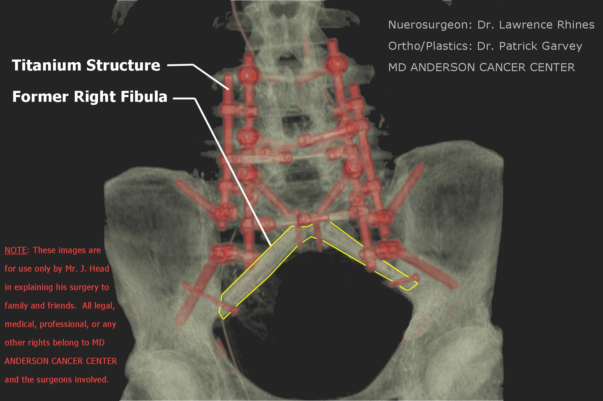 JEFF's SACRAL REBUILD Anyhow, the Drs agreed, we got approval for the extension at work, and the good Christian peoele, my brothers and sisters here at Faith Lutheran are allowing us to stay longer than the four month limit they normally impose. What a blessing and answer to prayer. I marvel at how doors have opened and things fallen into place for us and know it is due to the faith, prayers, love, and work of so many good people...and most of all, my Father in Heaven and Lord and Savior, Jesus christ. So, we will leave Houston now on September 25th, drive to Denton that day and go to Church that weekend there...then then MOnday morning the 27th leave for Idaho. we hope to take four days and arrive home on the 30th of September, and then I would go back to work on October 4th, a Monday. Lots stands between then and now, but I am making progress in my rehab. It has been difficult...and painful...but I am slowly coming forward. They have me walking with a cane and I am having to start all over at making progress in terms of distance and stamina, though I already have more than I had when I left the hospital for sure. Here is a list of all the videos I have made to date since the hospital. They are on facebook:
Jeff in hospital on tilt tablt, 1st time at 90 degrees (6/8/2010)
Jeff in apt w/walker, & taking some baby steps (7/15/2010)
Jeff with walking sticks, walking bacwards (7/20/2010)
Jeff at TIRR Gym walking (7/24/2010)
Jeff at store in scooter cart (7/24/2010)
Jeff gets to drive his own truck for the 1st time (7/26/2010)
Jeff working in rehab without the walker (hard work this) (8/6/2010)
Jeff's hardware from his surgical rebuild. Amazing! (Posted 8/8/2010)
Jeff walking on his own in the apartment. Short distance, but gratifying. (8/10/2010)
Jeff using various canes and assists in Rehab, ready to move away from the walker. (8/12/2010) I know I have listed some of these before, but I wanted to get them all in one place for those reading. we had our first three month review last week with MRIs, CT Scans, blood work, etc. We had a follow-up visit today. Everything looks good in the surgery area. The bones are beginning to fuse and the hardware is doing fine. No new cancer down there, but at six months they will do a more thorough check in other areas of my body. Dr. Rhines is an unbelievably talented nuerosurgeo and a fine man...as is Dr. Garvey, the plastics/bone rebuild surgeon. Dr. Rhines did a phenominal job with my nerves that has allowed me to walk, drive, etc. There is still a lot of nerve related pain, and bone pain, and some of it will probably always be there. There is also the entire issue of bowel and bladder management. In my case, the valve on the bladder has been left open. When any appreciable amouunt gets in there, it just leaks out. This means we have to take extra measures to catch it...and we do, but it also means every couple of hours if I use my muscles, I can force it out and not have to catheter at all, which is a great blessing because otherwise I would have to self-catheter 3-4 times a day. Bowel management is difficult. We are trying the proscribed rotuine with mixed results. It's something you just live with and be prepared for. It's not what we imagined for life in these years...but it is life. I will be able to spend time with my wife, my kids and their kids. Jeff and Jolene (our number four child and eldest son and his wife) just announced their first child coming in February 2011. I am grateful I will be here for it. Jared (our youngest child, who just turned 21) will come home from his mission for our church (LDS 2 Year Mission) in April and I will be here for that. I am so grateful, despite the disabilities, that I will be here for those types of things and be available to help, to experience, and enjoy them with my family for however long the good Lord sees fit, because it is, and always has been in His hands. As I have said so often, I have so many people to thank and could never adequately thank them for their help, encouragement, faith and prayers. My wife has been an angel and I am so grateful, humbled to tears, and in love with her. Being raised in Texas, there is a saying that you should "Marry up." Well, I married up...way up, and i thank God for it. The best I can do, with any of this gratitutde, is to stand to and help others as I have been helped...just as the golden rule teaches us all. I thank my Father in Heaven nd His Son most of all, for all of these things. I am so grateful to partake of Christ's sacrement again each Sunday and renew the promise and covenants I have made with them. I urge all people everywhere, whoever may read this account, to turn to them in your life, at all times. If you will, you will find that in times of hardship and difficulty thay are there for you. As you see, that does not mean the hardship and difficulty will not come...it does mean you will be empowered, whatever happens, through their matchless power and love, love, to have the strength and ability to get through it according to their will, and either continue here, or return to them there...both of which are blessings. Maybe just barely, you will get through...but to get through nonetheless, and to thank God for it on the other side. I will provide more updates as I make progress and experience things related to my recovery that may help others, either who are going through similar experiences, are to understand those who do. Sincerely, and as always, in Christ, Jeff
Thank you so much to everyone hwo has helped, prayed, encouraged and exercised their faith on our behalf. The healing is progressing amazingly. I am walking using a cane and can take dozens of steps without a cane at all now. My heat if filled to overflowing. Today was my first day back ar work. I will work half days and build up to full days over a 3-4 week period. It felt good to be there. Though I still have a long ways to go in walking normally, and though I have handicaps that I will live with the rest of my life, I am amazed at the goodness and merci of a loving Savior and Father in Heaven who have lightened my load and burden and bouyed me up and carried me along for their purposes. I am led to exclaim, as Job of old, "the Lord giveth and the Lord taketh away. Blessed be the name of the Lord!" In either case there is the blessing and their will if we will have faith and look for it and then recognize, profess and live it. We arrived back in Idaho and home on Thursday, September 30th after taking five days to drive from Houston. I have a photo album online on Facebook here of that drive home, and have several videos I posted of our progress which I will also link too.
 TRIP HOME TO IDAHO Video: Clayton, NM and Capulin National Monument - 2010-0928 Video: Entering Idaho - 2010-0929 Video: Homecoming in Idaho - 2010-0930 This last pic says a lot of how I feel and forward I looked to getting home. I believe grand parents have a special calling to witness to and influence their grandkids...through love and gentle persuasion. I intend to do that my life long...however long the good Lord keeps me here, as well as to the rest of my family and friends...as well as do all I can to help our Republic restore all that has been lost and taken away by the wiles of evil and conspiring individuals.
 The miracle worked for me medically is amazing and due to the will of the Lord and the faith and prayers of so many. But the miracles of faith and spiritual healing that the Lord is working on so many through this and other similar experiences are the true miracle and everlasting. Sincerely, and yours in Christ, Jesus, Jeff
A year ago today I was diagnosed with a sacral chordoma. It is a very rare, very serious, malignant bone cancer tumor. In my case it required the complete removal of my sacrum bone (that attaches your hip bones to your spine) and a rebuild of my pelvic area down in Houston, Texas, at the MD Anderson Cancer Center. That was accomplished in late April and early May through three major surgeries. I was released from the hospital around July 1st in Houston, and then stayed on in Houston in fairly intensive rehabilitation through September, 2010. I returned home on September 30th and started back to work on October 5th. I am now working full time. The last year has been life altering to say the least. I wanted to sincerely, and from the bottom of my heart thank everyone who has encouraged us (me, my wife Gail and our family), prayed for us, helped us (with shared leave, funds, or in any other way), and exercised their faith on our behalf. To date, the good Lord has determined that I shouldl stick around a little longer on this earth, and I am back at work full-time, walking less and less with the cane (and it is significant that I can even walk at all) and moving forward with life. In the end, I give all credit to God above, but must also thank so many others who have had a hand in it, especially my dear wife who has been angelic to me throughout this entire experience. I am one of those individuals very, very blessed to have married "up"...far beyond anything I could have imagined. Here are a couple of videos of me walking without my cane recently that I thought those who have been following this might be interested in: The recovery and rehabilitation process has been long and difficult and it continues to this day. In addition to the pure physical difficulty, there are emotional difficulties as well that I have become so familiar with, which troubles I had never experienced with respect to such worry and concern over my ability to provide for my family and progress and recover to be able to do that fully. As time goes on, and it becomes apparent that though you are recovering, and that that recovery has been miraculous...there are things that will never be the same and that will have to be lived with throughout the remainder of your life, there is an emotional impact. I want everyone to know that that emotional pain is real, and at times it can be debilitating...just as debilitating as the physical injuries. I am blessed with a lot of help in this regard, both from family and friends, and spiritual. It has helped bouy me up through these experiences...but I want to make sure and note for all, and without any shame in doing so, that the emotional struggle to come to grips with a new life is real and it is a deep, hard struggle. Please, please, never take it for granted and never forget it when you see people or know people who have gone through such trauma. If they have something to do (like a job), if they have something to focus on (like family, faith, hobbies etc.), if they have love in their lives (knowing of God's and Christ's love for you, family, friends...a pet for example), then they can be helped significantly in making progress and ultimately recovering from those scars as well. I needed to say that...it is a part of this I have not talked a lot about, but a part that is real and important to understand. One of the areas that helps is (as I said) support from family and friends, and having love in your life. One of the sweetest parts of remaining here in life at this time, as I go through this recovery, is being able to sit with, talk with, play with, and influence my grandkids for the good. I literally held onto and looked forward to that...and now we are living it. We have six grandkids now and two more on the way by Spring, so I will get to see those two as well...and hopefully more as the years go by. Anyhow, on this "anniversary", thanks to each and every one who has helped, encouraged, and in any way thought and wished the best for us. Particularly the prayers...I can tell you that they all helped through some very difficult hours, days, weeks, and months. I cannot adequately express or repay...but I can do all in my power, as I am able, to express my gratitude and try to help others. Sincerely, and in Christ, Jeff
A little time has passed between this entry and my last one. During that time I have continued to make progress in my rehabilitation, and to continue to mentally and emotionally come to terms with my new life and condition. As to my rehab, I am walking pretty much all the time now without any assisted device, including my cane. I am finding that I am getting more and more stamina as the weeks pass as to how long and how far I can walk, but progress and improvement are defintely being made, however slowly. I still have a bit of a hitch in my left hip as I walk, and it drops down when I take a step because there is continued weakness in that joint. There may always be. As time goes on and those muscles slowly build, it will improve. In addition, on my right side, my foot itself has a greater loss of sensation than my left and my calf muscle is weaker there. Getting up on tip toes still alludes me, but I am working with that every day as I go up and down the long stairs at work and again, making slow progress. Here's links to a couple of videos of me walking in February without the cane around town: 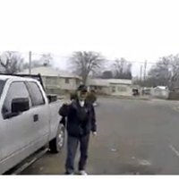 Jeff walking without the cane at the Post Office in Emmett, ID 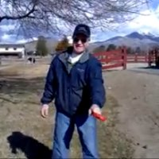 Jeff walking their new dog at the vets office in Emmett, ID It's really heartening for me to see these videos and then compare them to my progress last June and July (of 2010) as I came out of the hospital. Whenever I am frustrated or think the progrewss is too slow, I just compare the videos to see how far I have come. One of the most important reasons for this update was because last week we went to Houston and MD Anderson Cancer Center for our next big checkup. The flight down and sitting in airports and on the plane on those seats was not too comfrotable for me, and I had quite a bit of anxiety...more about the trip itself and dealing with my disabilities, particularly bladder and bowel function, away from home and in the hotel. But we did it, and my wonderful, dear, lovely wife, Gail was there for me, as she has unfailingly been throughout this entire process...along with the prayers, faith and love of so many friends, and I was able to get through all of that. The MRIs, CT Scans, blood work and consultations all went GREAT! On Thursday, February 24th, we met with Dr. Rhines. He was almost estatic and very excited as he explained to us, and then showed us on the computer the progress my bone fusions are making. The bone fusions are ahead of schedule and doing better than expected. There was no new cancer in the surgical area or the soft tissue and this was a hugely positive and good report as you can imagine. I still have three very small areas of chordoma cancer in my hip bones (illium) but they were there when they discovered and removed the large tumor in my entire sacrum. The Dr. is not too worried about those, and did in fact see another very small spot on my illium that is similar. But they are all growing, if anything, slower than expected and are very slow growing to begin with...as in years. In September, at the next checkup, we will determine how to treat those. If there are no more that arise, we will use stereo-tactical radiation, which is a very high dosage, focused very tightly and accurately at a very small area. That process can be done in a day or two once they get everything programmed and set up and has proven effective. If a bunch more show up, we would use the general proton radiation, which is much more broad and a longer term (7 weeks of treatment, twice a day, five days a week for seven weeks). It has also shown itself to be effective, particularly in retarding growth. We hope that is not necessary because there is risk of complications from it, particularly in weakening the bone. Dr. Rhines and Gisela were very excited to see me walking and feel I am making very good progress there as well. All in all it was a VERY positive report and trip. We went out and ate at Luby's Caferteria in celebration and it was very good. We retunred home on Friday, February 25th, 2011. So, we are thankful to our Father in Heaven and His Son, Jesus Christ, for their tender mercies to us in these circumstances. It is not what I would have picked...but it has been for the best. Our love and faith and the faith of so many others has grown and that is one of the most important things that can happen in life...a price cannot be placed upon it. Every circumstance we face, particularly the difficult ones, gives us the opportunity to grow more, to love more, and to develop our faith. It is what God intends for us and is what life is all about. I am thanksful for that knowledge and am secure in my faith of Jesus Christ and know that one day, in His time, we will all experience a glorious resurrection where the ills and sicknesses and ails of this world will be behind us, and we will benefit from the love, faith, and experiences we have had and that benefit will be forever.
In the mean time, I will continue to document this experience to all who will read it. Ultimately, perhaps starting soon, I intend to turn it into a book. I believe a book about all of this will benefit others as much as, and perhaps even more than these blogs. At any rate, that is my thinking at this point.
God bless you all, and again, from the bottom of my heart, thank you all for your encouragement, your faith, your prayers, and your love.
Sincerely,
Jeff
Time passes quickly, particularly as we are involved in our daily routines of life. It is no different after such major events and crisis lik what I have experienced.
Yet, things are not the same. Life has changed for me and my family and we continue to deal with it as best we can with each other's help and support and the tender mercies of a loving Father in Heaven and His Son, our Savior, Jesus Christ. The faith and outlook we have on the future...and indeed towards one another and those around us, guide us in these circumstances like they do in all others.
A year ago today I was still in the hospital at MD Anderson. Having completed all three of my surgeries between April 27th and May 9th. I had been in the ICU for several weeks but ultimately was given a normal, private room. June 19th found me in that room, having started my in-hospital physical and occupation therapy. I had been through the tilt board that took a week or so to get me to a 90 degree stadning position and had finally started slowly, painstaakingly walking with a walker and the help of my therapists. June 18th, the day before today a year ago, was also the day before my birthday.
I remember it very well. I was walking around the nurse's station...the first time I had gone around it more than once.
In such situations your perspective of time and distance changes. it could only have been about 50-60 feet around that nurse's station...but oh it seemed so much further! I would take little rests as needed and as I came around for the second time, about to start a third...I was so proud of myself and so grateful. Gail was not there and I was a little sad. She had indicated she needed to go out and send something to her father for Father's Day.
Little did I know.
Next thing I knew, someone was standing behind me and said, "Hello Pops," I turned around and could not believe my eyes. There was my son, Jeff and his wife, Jolene. They had flown to Houston to surprise me for my birthday and Father's Day. I literally broke down and wept. What a surprise and how grateful I was.
I shared with them my great accomplishment as I went around the third time.
Now, here I am at home, about to celebrate another birthday and Father's Day today. My 55th birthday.
Today we will have four of our five children here, three of them with their spouses and we'll have seven of our eight grandchildren here. What a blessing! Katie and her husband, Nathan, and their three boys moved back into the Boise area yesterday. We helped them move in (actually I did not do much more than lend moral support and carry a couple of light things). How happy we are. Just need to get Rachel over here now. As it is, we have four of five living near by. I love my family so. And how grateful I am to be able to see them all...for however long the good Lord deems it here on this earth.
I have made progress and walk now everywhere without a cane.
My leg, and particularly hip strength in my left leg is still not what it should be...I do not believe it will ever be what it was.
My bowel and bladder management (and I have to do this daily, painstakingly because of the nerves that were cut to take out my sacrum), is doing very well as these things go. it is still one of the hardest things for me and a source of constant worry, despite the fact that it is going so well as these things go.
I find that worries and concerns get to me much easier than they diod before this experience. I suppose my body chemistry has changed. I am so thankful for a loving wife, who cares so well for me and about me and helps me get through these minor crisis...and family that doe sthe same...and particularly, as stated above, for a loving Father in Heaven and His Son, whose plan of atonement salvation helps me understand that it really will be okay, and that I have important things to do and can carry on.
I know one of the reasons I have been preserved is to witness to others, particularly going through such difficulties that there is help...there is comfort...there is relief to the soul. I intend to do that every chance I get...like now.
We will be going back to MD Anderson in September for my next "check up." They will check for any new cancer near the site of the surgery or in my soft tissue. We are very hopeful in that regard...but things will be according to God's will and we will face whatever challenge when the time comes. We will also decide what to do about the three small tumors in my hip bones. They are chordomas like the one that was taken out, but they are very small and very slow growing. If there aren't more of them, we will probably handle it with what they call stereo-tactical radiation using protons. This would be a 2-3 day affair where each one is zapped with a very precise, very heavy dose, precisely onto the tumor.
Amazing technology.
If there are several more of these small tumors, or if some cancer develops in my soft tissue, we would probably use the broader proton radiation which lasts 6 weeks, five days a week, and involves thirty treatments. We hope to avoid that. Because of the dosages and the more broad nature of it, you can only do it once in a life time. it also has potential significant side effects. We hope to avoid that.
While in Houston in September, I have been asked to make a presentation at "Chordoma Day," and annual event they have for all of their chordoma patients. A lot of folks will be there and they discuss and bring out so much new info. I will be presenting with two very distinguished men, that I respect so much. Dr. Lieberman, the Phd Therapist from TIRR who worked with me, and Dr. Rhines, my neurosurgeon who did my surgery and who is the head of the Spine Department at MD Anderson. They will present first, about my case, the surgery and the therapy necessary...and then I will speak as a patient and what it was like and what one can and should do to prepare and then cope with the results and the blessings of survival. See...another opportunity to help and I know if I am humble and seek the help of the Lord, he will bless me with His Spirit so that presentation can touch and help others.
In the mean time...tomorrow I am back to work. Another great blessing. Since getting back last October 1st, three months after release from the MD Anderson and at the conclusion of my intensive therapy at TIRR in Houston, I have been blessed to work full time. It has not always been easy at all...but it has been a blessing. Both for our finances and for me, keeping me involved and focused...which is very important.
Again, thank you to all who have prayed, given comfort, encouraged, helped, thought about us and called or visited. Every one of those things and so many more have helped more than I can explain. I pray I can help others similarly.
Again, thanks mostly to my dear, wonderful wife and children, and those wonderful grand-children who are a great light to us...and thank you to my Father in Heaven and His Son, my Savior and friend, for helping me...for teaching me. I pray I can pass those blessings on always.
Happy Father's Day all!
Sincerely, and in Christ,
Jeff
Well, it's been some time since my last update. Gail and I are headed to Houston on Saturday for my next checkup at MD Anderson which will take place next week. On Monday we have an all day battery of MRIs, CT Scans, blood tests, meetings, etc.
We will know by Tuesday the results and are hoping that no new cancer has developed.
On Wednesday they have a large Chordoama Cancer Awareness Day. They have this each year and we were priveleged to attend last year just before we left Houston. Yes, it's been a year ago that we were completing rehab and leaving Houston to return home.
This year, they have asked me to take part and be a part of a threesome presentation specifically about my condition. Dr. Rhoines, who is known world-wide as an extremely talented neurosurgeon specializing in the back and an expert on Chordomas, and who is the head of the Spinal Nuerosurgery department at MD ANderson, will give on part of the presentation. Dr. Abraham Lieberman, the PHD Rehab doctor from TIRR Rehab in Houston (the same facility that treated the congresswoman from Arizona who was shot), will give another part of the presentation, and then I will be giving a portion from the patient's perspective.
I am grateful and happy to take part. I know the good Lord preserved my life to witness for Him and His Son, and to try and help others, which I believe I can do with this presentation. Some of the greatest help I have received, outside of the love and faith of my wife, family and friends, has come from individuals who have been through this ordeal who befriended me and helped me know what to expect. Anything I can give back in that regard will be great, and a blessing I hope to others facing the same or similar circumstances.
As for as how I am doing...I find that I am still making slow, measured progress in some areas. HAve plateaued more or less in others. I am healthy and not in a lot of pain, but still on the medications. My strength has slowly increased, but it would take several months of pretty relentless rehab and exercising to continue improving beyond where I am. I am not walking at all with a cane, but still have a hitch and weakness in my hips and abductors. Thing is, after a 10 hour work day, I am generally pretty worn out and just am not up to exercising...hopefully, in time I can work it into my schedule to continue the improvements.
The bladder and bowel regiment has worked fairly well for me. No major difficulties...but the whole thing is still something I am dealing with, and struggle with because of concerns of what might happen if I have difficulties (either infections, blockages, etc.) I am grateful for how I have been blessed though, because I have been a year and three four months since the surgeries and have not had any major difficulties.
Beyond that, here are a few more recent videos of me. One is me doing a short little jog, inside, and the other is when I attended the Cancer Society's "Walk for Life" in our community in Emmett. That was a lot of fun and is something that is humbling as so many people, who themselves may not have had cancer, but whose life has been touched by it on one way or another, get together and help those of who have it now, or others who will contract it in the futre.
Jeff doing a Jog in June 2011
I will make another update after we get back from Houston to let people know what we find out.
until then, once again, my sincere and humble thanks to so many who have exerted their faith in God on our behalf, prayed for us, encouraged us, or in any way helped us through these difficuties. may He who is mighty to save return the blessing to you and yours ten fold.
Sincerely and in Christ,
Jeff Head
Wow, what a whirlwind trip down to Hopuston and back and so many experiences.
First of all, let me say that all of my tests came back in good shape. The CT Scans showed the bone fusions have grown even strnger around my lat four fused vertebra and where my former fibula now attaches to the base of my spine and to my hips. Of extreme importance, the MRIs showed no new cancer in my soft tissue, and showed that the very small spots on my hips had grown very negligably or not at all. This is all very good news. With no new spots on my hips and with very very slo growth, they seem to be chordomas as well (as thpught, though we have not had a biopsy and would prefer not to "bother" them) and this leads us to probably using the sterotactcial radiation to treat them next time we go to Houston.
The plan now calls for them to give me an MRI here in Boise a few weeks before we travel to Hosuton and then go there with a plan, if things are similar as now, to get that done while there. It is a procesds that once set up will require one or two out patient visits during the 4-5 days we are down there.
Once again, our eternal thanks to all of those who have prayed and exerted theior faith on our behalf in this journey.
The trip down was something. We flew out of Boise at about 2 PM on Saturday, September 10th, with a 90 minute layover in Minneapolis. In Minneapolis, our flight was delayed...and dealyed...and delayed. We left there four hours or more late. This is worse for me because 1st, those aiport chairs are not the most comfortable when you have no sacrum (or tail bone) to sit on. Second, because it really disrupts my schedule for eating and taking care of myself and tends to cause significant anxiety as well as potential problems with my diet and schedule. As it was, we finally got to our hotel room near MD Anderson at 2:00 AM on Sunday morning. We slept until noon!
That day we visited my dear Aunt Esther who is my mother's sister and the only other surviving member of that wonderful family. She and her daughter, my cousin, Cynthia, live together in their home and we had a wonderful visit with them.
Monday I had my tests as well as the initial consultation with Dr. Rhines. We started at 6:30 AM at MD Anderson. Since I had a CT scan, two x-rays and an MRI scheduled, I just left the hospital clothes (blue shirt and pants) on all day instead of changing in and out of them four times. Every things went well. We had a wnderful visit with Dr. RHines and Gisela, his chief nurse practioner. As always they are so personable and gracious. Since we had not had the MRI yet, we could not find oput about the cancer, but the CT Scan looked great. I showed Dr. Rhines my "jogging" there in the hallway and he was estatic.
We met with the radiation oncologist and talked about potential course of action as out lined above. We then went for the MRI at 5 PM. Again, interminable delays. We did not get done with the MRI until well after 9 PM. That was a busy day. I have to say I was pretty worn out after the Saturday trip and the Monday tests. Gail as always, took great care of me and helped me through. She is my eternal angel.
On Tuesday we took it easy. Slept late again. Then, late in the day, we met with friends at their hotel who had come in for their tests and the large Spine Tumor Convention the nest day which we were staying for and which I was presenting at. These friends, Wiley and Sharon Shaw, and another couple, Steve and Linda, were folks we had met while I was in the hospital last year who also (Wiley and Steve) had had sacral chordomas and also had to have parts of their sacrum removed. We have grown good relationships and call and network with one another regarding our conditions and issues we face. I am so grateful for them...just another of God's tender mercies to us.
On Wednesday we met all day at MD Anderson. Started at 7:30 Am with breakfast and then had meetings and presentations all day, with dinner from 5:30 to 7 PM. I enjoyed the day immensely. They had very comfortable chairs for us. My Physical Therapist, Dr. braham Liberman gave the first presentation. He was a God send to us last year and helped me so much. We patients refer to PT, instead of as Physical Therapy, as "Physical Terror." It hurts so much! But it has to and though we jokingly say that, we are so grateful for what it does for us. Dr. Liberman was and is unbelievably knowledgable, and so very personable. I thank God in Heaven for Him and his help and we have become good friends.
Then I gave my presentation about my journey. OUr life as we knew it before, discovering I had a problem and ultimately getting it diagnosed. The surprise and difficulty of dealing with that diagnosis (as described in this journal), getting with MD Anderson, preparing, going through the dramatic surgeries, getting through the hospitilization and then the rehab...and finally coming home and coming to terms with our new reality. The faith that has seen us through and which we try and share wth others in similar circumstances. I am so thankful for the opportunity to try and help others.
After me, Dr. Rhines gave his presentation about spinal, brain, and sacral tumors and focused on my case. He is a very smart man...really, a genius, and in addition to being a renown neuro surgeon, he is as personable a man as you will meet...and a GREAT engineer as well given the structure he designed that now resides in my back. It was a great presentation. We later were able to meet with him after he saw my MRI and gve us the good news about that outcome. No new cancer and little or neglible growth in the very small (pin head sized) spots on my hips.
Later in the day, Dr. Patrick Garvey presented the challenges of plastic surgery as it relates to designing structures and using bone and tissue to help in these very massive and complex surgeries. It was amazing. He was the one who took one of my abdominal muscles and skin tissue covering it, and used it as a patch for the huge wound in my back from the removal of the malignant sacrum. He is also the one who took my fibula from my right leg and the new blood supply (veins) for it from my left leg, and inserted that bone as a strut in my back. That's why the bone fusion is so critical. Ultimately that bone fusion around those bones and around my fused vertebra will be what holds me together. Otherwise, even the titanium will wear out and ultimately fail without it. He and his team did a great job on me and he also focused on mycase...showing some pictures we had not seen of the procedure. Another grweat, personable, intelligent man who was there wheen we needed it most.
For those who have not seen it, this is a picture of how my back looked a few weeks after surgery with all the new hardware and bones. Now, around the hardware and the fibula, new bone has grown and fused, making it all much stronger:
The last presentation was from a young woman who had discovered she had a bone tumor that took a large part of one of her hips and part of her sacrum. She discovered it in the final stages of her pregnancy with her first child. What an inspirational presentation! She helped us all see, once again, that through faith and determination, and a will to accept our condition and make the most of it, there is a wonderful life after these experiences. I was so grateful for her words and inspiration.
Dinner was marvelous. There had been perhaps a hundred patients and their spouses or care givers from the conference and probably 60 or more ate dinner with us all. Dr. Rhines and GIsela presented me with an award and a plaque. It states,"Heart of Faith and Spirit of a Warrior. To Jeff HEad for sharing his journey with others through faith, the will to fight, and fulfillment." I immediatley asked to say a waord and all I could do was dedciate that plaque and sentiment to my wonderful, dear wife, Gail. I try, and I hope to help others...but many times there is a thin covering between that will and desire to help and other feelings that would get me down. Gail has helped me through that and been the real strength and I have to thank my Heavenly Father for her and let others know.
That whole day was great and we are determined to attend these conferences each year.
We got to the hotel late, went to bed and then arose on Thursday, Sept. 15th to head home. The trip home was long, but no delays. We had a four hour layover in Salt Lake City and about a mile and a half walk between terminals. I went a good ways and then we had to sit and rest. I was pretty worn out from all of the activities. Gail got a young man, an attendant there at the airport, and he ended up wheeling me the rest of the way to our terminal. A very fine young man whom we thanked and asked God's blessings upon. For some reason, in Salt Lake, they do not have the electric carts to take people around in. They determined the safety hazards over rode the benefit I suppose. I for one, wish they still had them.
So, here we are back in Idaho. I mowed the lawn yesterday, am heading for the dump today and will take my grandsons to the movies this afternoon. Wish the granddaughters could come...but there other grandmom has claim on them this weekend and that is completly understood. I am so thankful for our family and the time we all spend together. It is what life is about and those relationships, along with our faith, are some of the few things we acquire in life that we can take with us. Cherish them and spend as much time as you can building them.
Again, thanks to all, I will continue to update things as they occur.
Sincerely, and in Christ,
Jeff Head
Today marks a significant anniversary in my life, one that I certainly did not know was coming, did not wish for, and yet one that came in its time and has very significant impact on my life and will continue to do so for the rest of my life. Two years ago today I got the diagnosis that I had a malignant sacral chordoma in my back. It was what had caused so much pain, searching, discomfort, and disruption to my life for a couple of years before, gradually increasing in intensity and impact through that time.
That diagnosis started Gail and I on a path in life we had never trod before. The tumor was literally filling up most of my sacrum (these tumors are slow growing and it had been in there for at least 20-25 years according to my Nuerosurgeon, Dr. RHines) and on the verge of spreading beyond. Chordomas, once they get into soft tissue are much more agressive. They do not respond to normal radiation or chemo therapy. We were referred to and accepted at MD Anderson Cancer center in HOuston and immediately (within a few days after Christmas) drove to Houston for our intial meetings. we thank God that the surgeons and neurosurgeons here rightly recognized the need to have this taken care of elsewhere. There are only 3-4 places in the country equiped to address this disease, particularly at the advanced stage I had.
My options were simple, either undergo massive and radical surgery to remove the entire tumor and significant margins around the tumor, or go into pallitive care and let the cancer take its course. The surgery would be massive, itself life threatening, and would leave me signficantly disabled for the rest of my life. Walking would be in question, normal bowel and bladder fundtion would be severely imparied, nerve damage and feeling in my lower trunk and down my legs would be significanlty impacted. Pallitive care would make me as comfortable as possible, but once the cancer destroyed those same nerve roots that the surgery would take, I would face the same prognosis.
After a lot of prayer and consideration, and a lot of counsel from family, freinds, medical professionals and through our church, we made the decision that was evident to me from the get go...we chose to strive for life...whatever life the good Lord deemed for us.
And so it went. It was very difficuly. We had wonderful family, friends, neighbors, mebers of our congregation, acquantences all over the country, and people who heard of our plight pour out their love and faith on our behalf. That strength, coupled with our own faith and love of our Savior and Father in Heaven allowed us to face the struggle with faith in God, knowing His will would be best.
It has been hard and continues to be so. The cancer had spread and I have three small spots in my illium (hip bones) that will soon be addressed by a special proton radiation technigque that is highly concentrated and very exacting. These small tumors, like the other, are slow growing, but need to be addressed and it looks like in March of 2012 we will do so.
I write this now, two years later, after all that built up to the surgeries. The continuing pain, the reaction to some of the medications that sickened me terribly, the hospitilization shortly before leaving for the surgical dates in Houston that almost put everything off. The three major surgeries in about three weeks time that involved 36 hours of surgery and transfusions equal to over four times my entire blood supply. The three months of hospitilization and slowly coming out of the 3 weeks of intinsive care. Being taught to sit up, being taught to take care of my bodlly functions and the type of diet I would have to be on from now on. Being taught to stand and walk again...first with a walker, then with a cane. The three months of intensive rehabilitation and improvements in my ability to stand and walk...and now the extended time back home and plateauing where I walk without a cain and drive where I need to go.
I will never hike the mountains again, my walking is not altogether rock solid or steady, but I can do it and I can work and provide for my family when all of that was in question.
Prayers have been answered, faith has been confirmed. Not that I have been miraculously and completely healed...but I have been miraculously treated and enabled, for God's purposes to continue my life, to be with my family, to see my children continue to grow with their own families and careers. To witness tow morew granchildren be born and have them now toddling around when visiting us playing with and sitting with their "papa". Taking oledr grandkids (we now have eight altogether) to movies and for drives, having them help me go to the "dump."
Spdneing more time with my dear, wonderful, and angelic wife and best friend and sweethjeart.
God's hand is in each of our individual lifes. In the good times and in the difficult times. His Spirit and Hand are there, if we will humble ourselves and reach out to buoy us up and guide our feet. He has apurpose for us, and that purpose, no matter how difficult is absolutely what is best for us because we touch others and help others as we get through the experiences as best we can and with His help, irrespective of the outcome. I know that a big part of my survival is to witness these things to others. To give hope...and to take hope as I see others, more severely impacted than me, struggle on valiently and themselves help others, including myself, in their trvails. I can do no less.
Thank you, from the bottom of my heart, to all who have exercised their faith in God on our behalf, who have helped us, encouraged us, prayed for us, and been there to whatever extent possible. I thank God for you each every day and witness His Hand in all of this for His purposes and for the betterment and enrichment of all involved.
Please read my entire journal...HERE on my site...or the PRAYER THREAD established for me at a conservative forum of which I am a member.
May God return the blessing to you each, ten fold for the tender mercies and help and encouragement and faith you have given.
Sincerely and in Christ,
We decided this last weekend to put off our next trip to Houston. We were scheduled for March, but we have a daughter getting married in early April, and a large family reunion in July, both of which involve significant travel and expense, so, as things seem pretty good right now, we decided to accellerate the time when we start annual visits to Houston to this year and start this September. We will get the necessary MRIs and CT Scans done here in Boise and sent to Dr. Rhines in Houston. If he finds anything serious requiring attention now, then we will certainly go down and take care of it.
All in all things are pretty good. I have definitley plateaued and am not seeing a lot of further physical progress in my walking or stamina. I get around well with no cane, but my strength and balance are certainly not what they were, nor is my stamina. So, I have to be careful and guage what I do. It works out well and I have been richly blessed to be able to walk, continue to work and provide for my wife and family, take grandkids to movies, go out shooting with my sons and friends, and to take walsk. With a cane I can go much further, but as it is, I am limited to maybe a half mile to a mile without the cane and that will suffice.
The bowel/bladder regiment is the hardest thing...as those whom I have worked with who have been through it indicated. I have been blessed in that regard to not have to catheter myself because I can urinate. All the plumbing is there and for whatever reason, in the dealings with the nerve roots and such, my "valve" was left open so I do not have to catheter. But my condition has its own difficulties and I have learned to live with them, in the new "norm."
So, when we get the MRIs and Cat Scans, and as we approach the two year anniversary of my surgeries, I will write more.
Thanks again to all, from the bottom of my heart, who prayed, exercised their faith (and continue to do so), and helped myself and family. The best way I can try and repay that debt of gratitude and honor is to try and help others and always be grateful for what I do have. As always, thanks to my wife, Gail. She is my angel and has taught me more about selfless giving than any mortal person I know...and most of all thanks to my Father in Heaven and His Son Jesus Christ for helping me, and schooling me through this process, to know that their wil is always best...and helps us help others even in difficult circumstances and just adds all the more to the wonder of our life, and to our great expectation and faith in our future, here, and yonder, over Jordan some day.
Sincerely and in Christ,
It's hard to believe that two years ago today I was completing my third and final surgery at MD Anderson in Houston, TX, to remove my entire sacrum. I remember distinctly a lot about that experience, and then of course there's a lot I do not remember because I was really pretty out of it on the pain meds.
I was in the ICU another two-three weeks after that last surgery, having already been in the hospital sinec April 27th, 2010, when I came in for my 1st surgery. That one was about 10 hours long and went in through my abdomen to prepare for removing my sacrum and the chordoma tumor which had filled it up. They took my right side abdomen, including all of the muscles and skin tissue, and pushed it through to the back of my body to prepare for my 2nd surgery and use it to cover the wound that 2nd surgery would create. They also rearranged my intestines and rectum a bit to prepare for that 2nd surgery. They then went to my legs and on my right side cut through my fibula on both ends until it was barely hanging there so they would be able to easily remove it and use it during the 2nd surgery.
Then, three days later, on April 30th, 2010, they conducted the 2nd surgery which was the most major. It was over 18 hours long. They cut in through my back, making a circular incesion down low on my back with straight parts coming up half way up my back on the top, and then clear down to my recttum on the bottom. This was necessary because of the massive amount of work they had to do. They cut through all of the muscles tissue there, including mu glutes to get to the sacrum and open up enough to expose my entire lower spine. Then they went through the painstaking procedure of cutting out the sacrum and all of the nerves and nerve roots associated with it. A very bloody, and a vry intricate surgery requiring very special neurosurgeon expertise. I thank God it was Dr. Rhines doing it.
Part way through apparently they nicked a large blood vessel below the sacrum which began bleeding badly. An anesthesiologist noticed the drop in blood pressure but the surgical team could not get to it to repair it until the sacrum was out. So this individual pumped blood through me to keep me alive while all that was going one. 41 units of blood was used...about six times your entire blood supply.
Ultimately they got the sacrum out, repaired the blood vessel, built the lattice frame work of titanium around my last three vertebrae for support (which is quite the achievement itself...looks like a miniature Eiffel Tower, again thanks to Dr. Rhines)...but, then because it had gone so long, they determined they would have to do a thrid surgery to place the bone from my leg (the fibula) in as a strut support fot the other work they did. So, they used the abdominal tissue they had prepared and covered the wound with it, and stitched me all up.
It was then 12 days before the third surgery. And that was the third and final surgery which I celebrate today, May 11th, 2012. Another 9 or 10 hour surgery where they cut back into me the same way they have gone in on April 27th, and then took my fibula and a blood supply for it from the other leg, and built a spar that connects my two hip bones to the bottom of my spine and the titanium structure there. They used long titanium lag bolts to attach the bone to my hips and then used bone dust made up from scrapings of my own bone and other bone supplies so that when mixed with my plasma it would stimulate bone growth around the areas of the bones that were joined togewther and all around the titanium structure. This bone growth would ultimately be the principle support my body depends on because the titanium would otherwise wear out in ten years and have to be replaced...and I do not want to go through that again if I can at all avoid it.
So, here I am two years hence. What a blessing it has been.
I know the good Lord, without doubt, through the faith and prayers of so many family, friends, relatives, neighbors, people at church...at many churches...and friends at work and folks from all over whom I don't even know, prayed for me, and through the expertise and very hard and compassionate work of my Dr.s, nurses, attendants, therapists, etc., and because God in Heaven, for His own purposes, preserved my life. I promised Him, as a result, that I would witness His name and that of His Son for their love, compassion and mercy towards me.
I can walk on my own, without any assistive devices. I have been working full time since I got back home in October of 2010. I am providing for my family and working toward retirement. As a result of a leave share program (described above) where I work, I never missed a day of pay, and was never on disability. I have seen two new grandchildren born who are both over a year old now and walking and so much fun. I was able to see our youngest son return from a mission for our Church from Canada and begin getting on with his life and future. I work with my older grandsons building 1/350 scale models which brings a lot of satisfaction and joy. I am able to still mow the lawn with our riding mower and take our garbage to the dump each week. I spend a lot of time with our ids, grandkids, and with my wonderful wife, Gail, who herself saved my life during those long, long weeks in ICU and the hoospital and through rehab.
I have been to a lot of movies since being back, more than my whole life combined before, enjoying them with my grandkids, my own grown children, and most especially my dear sweetheart and wife, Gail.
Here's the link to a video on Facebook I recently took on Mother's Day, of two of our grandkids playing as their families visited us to celebrate Mother's Day with Gail:
Life is so good! How blessed am I to be able to witness these moments.
I was able to give a very neat presentation at MD Anderson last September when we went back for our checkup in Houston. Dr. Rhines (my principle physician and neurosurgeon gave a presentation, Dr. Garvey, the bone Dr. who worked with getting the bone out of my leg and building it as a strut to help support my entire pelvic ring also gave a presentation. Dr. Liberman, who was my physical therapist ater I got out of the hospital for three months and whose expertise and manner of working with patieents helped me so much walk as well as I do, also gave a presentation) I was honored and blessed to be used as an example for others in this whole process.
BTW, I am convinced without Dr. Lieberman's particular way of working with patients and great knowledge of the physical body, I would not have been able to progress so far. We stayed an extra month in Houston to take advantage of that expertise. In retrospect, if I had had enough leave and time, another three months with him would have made even more difference...but in the end, we have what we have.
Here's a link to a short portion of my presentation that MD Anderson put up on YouTube:
And here's a link to the entire presentation on the MD Anderson web site. I would urge anyone interested in these types of life altering and saving procedures to watch it all. Here's that link:
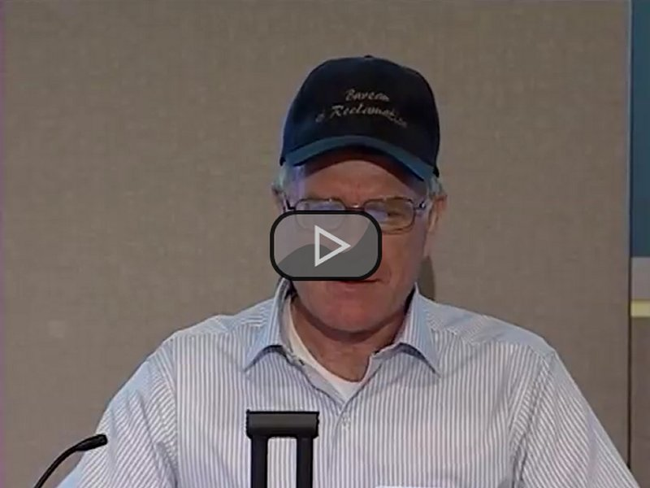
Finally, we are at a point now where every six months we will do our MRIs, CT Scans, and blood work here in Idaho to be sent to Dr. Rhinse at MD Anderosn for review. If need be, he will then call us down there. If things are clean, then we will wait to the next check up and go to MD Anderson once a year, in the late summer/early fall, in September each year...probably for the rest of my life.
We know that there are three very small spots of cancer on my hip bones. Have been from the beginning. It is likely that this Spetember that they will arrange to treat those with stereotactical proton radiation to retard or eleiminate them.
They are chordomas and very slow growing as long as they remain in the bone. If we can retard or eleiminate them, then it is likely that they will not cause me any problems for the remaineder of my life. Then the key thing is to just continue observing the soft tissue around the margins of where the main tumor was removed in the hopes that nothing comes back.
So far, so good in that regard. But in the end, all of that, in my estimation is in the Lord's Hands and we will face whatever it may be when it happens. We hope that no more will come along...but will deal with it should it be so, with faith in our wonderful MD Anderson medical professionals, in one another, in the faith and prayers of family, frineds and others...and most importantly with a steadfast faith in our Savior, Jesus Christ and His Father, our Father in Heaven.
As it is, I have been richly blessed to enjoy the time I have since these momentous events and thank God in Heaven, my dear wife, Dr. Rhines, Gisella, Dr. Garvey, Dr. Fu, Dr. Lieberman, and too many nurses, attendants, and therapists to name. Also, thanks to my dear friends and partners in the Chordoma experience, Neil, Wiley, Mohammed, Steve, and Scott who have suffered and lived through these same types of experiences. Networking with and befriending those who have experienced these same things, and helping one another, has been a critical part of the recovery and ongoing process...and a very helpful and enjoyable one. Finally, thanks to all of our family, friends, and others (particularly many on the facebook and on forums on internet) who prayed for us and encouraged and helped us. Life is good, we can all make the best of it, whatever our circumstance and help others as a result of our own experiences and walk in life.
I will add to this journal now with any major events or findings, and at least each year in the September time frame as I have my major checkup.
Sincerely and in Christ,
Jeff Head
My wife, Gail (who is my principle care giver), and I drove from Idaho down to MD Anderson Cancer Center in between August 24 and September 3, 2012 to conduct my annual check up for the Chordoma Cancer I have (and which this entire journal/blog is about), to attedn the Annucal Brain and Spine tuor Day at MD Anderson, and to visit my brother Lee and his family outside of Sanger, TX, north of Dallas.
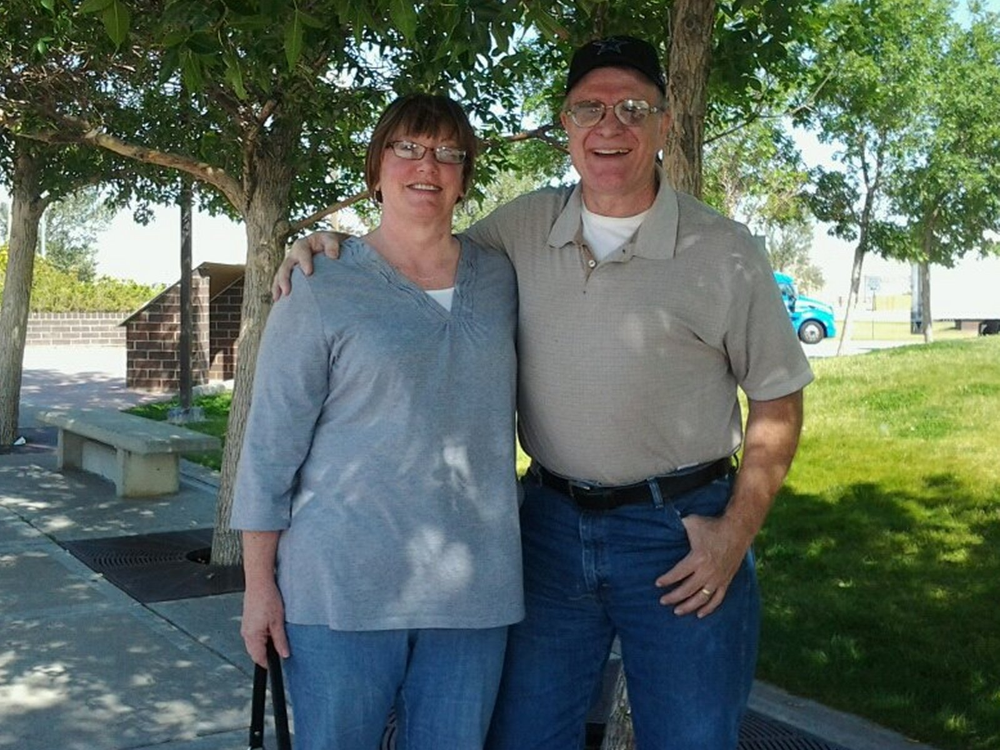
It was a wonderful trip. Beautiful weather for the most part, and our Ford pickup truck is a comfortable ride, particularly for me and my resulting disabilities. We had two wonderful visits (coming and going) with my brother Lee at our family homestead which Lee and his wonderful wife, Brenda purchased, outside of Sanger, Texas. Lee has himself has been dealing with a major health condition over the last 6+ moths since he was diagnosed with Lou Gehrig (ALS) disease early this year.
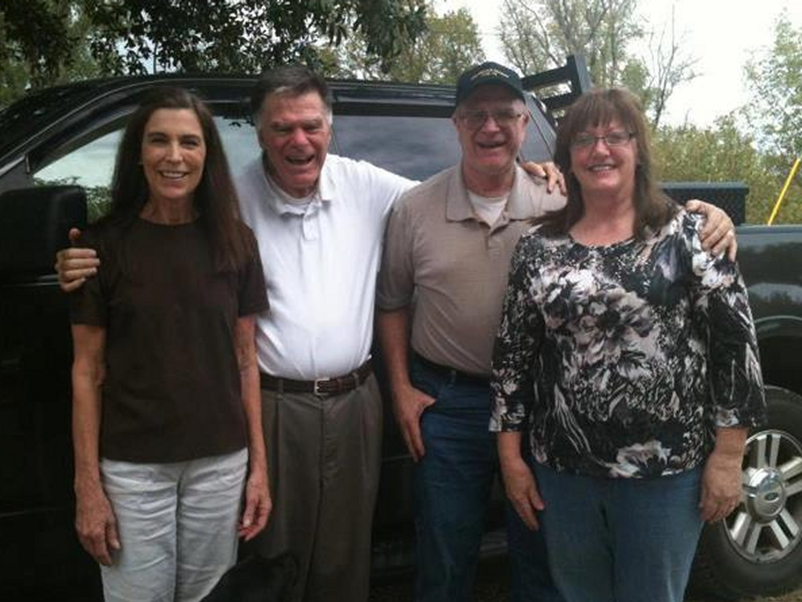
Let me say that the medical diagnosis for me was fantastic. In my condition, about as good as could be hoped for. My bone grafts where they took my right fibula and created a support strut for me have grown faster and stronger than expected. I will post comparitive photos once I get them from MD Anderson similar to the ones posted not long after my surgery. The bone grats around all the titanium hardware in my spine have also grown very strong. Dr. Rhines indicated that in these situations the medical race over a four to five year period is to have the bone gratfing become strong enough to support everything before the titanium begins to weaken and ultimately fails. In my case he is satisfied that we are already there.
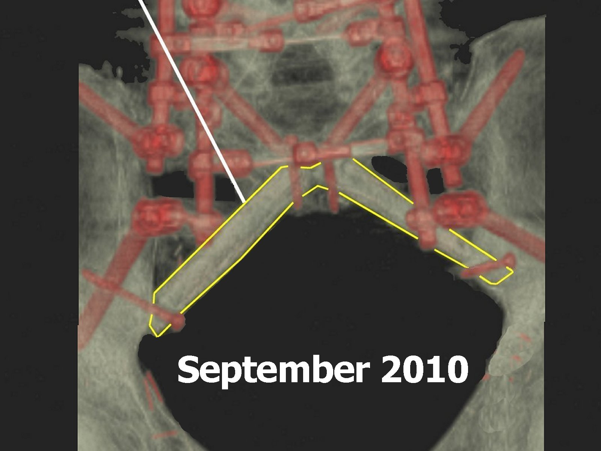 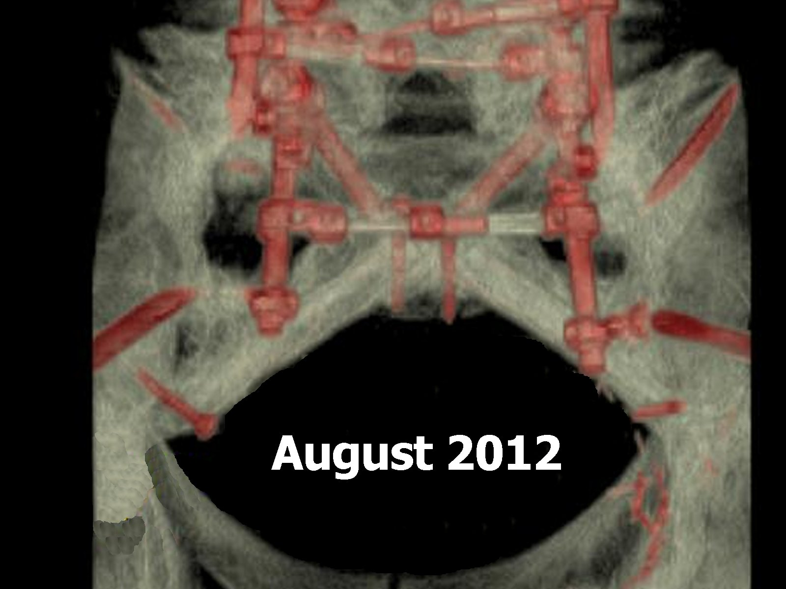
The small chordoma cancer growths in my hip bones are growing much slower than expected and while the result may have been to continue to ignore them...just in case we have pretty much decided to zap them with stereo tactical proton radiation next year to be sure. And, most importantly, there is no return of the chordoma cancer in the soft tissue around my original surgery or anywhere else at this point. All very good news from the battery of tests, MRIs and CT Scans I had while there. As always, Dr. Rhines and Gisela were great. I am embedding a small video I took at the dinner the night of the convention. Great people!
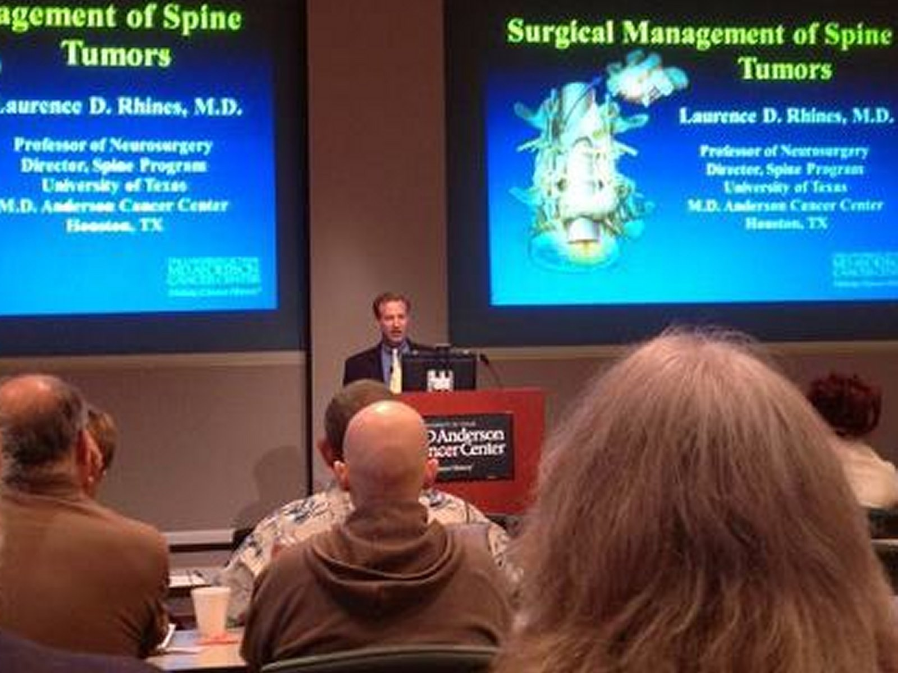
We also got to see Dr. Abraham Lieberman...or "Abe" as I call him. He is a fantastic, doctor level Physical Therapist who was amazing with my rehabilitation. We stayed an extra month with him and I am convinced he is one of the primary reasons (in addition to the faith and blessings, and Dr'. Rhines and Dr. Garvey's amazing expertise) that I am able to walk as well as I can today. He worked for TIRR then but has sense started his own, very successful practice.
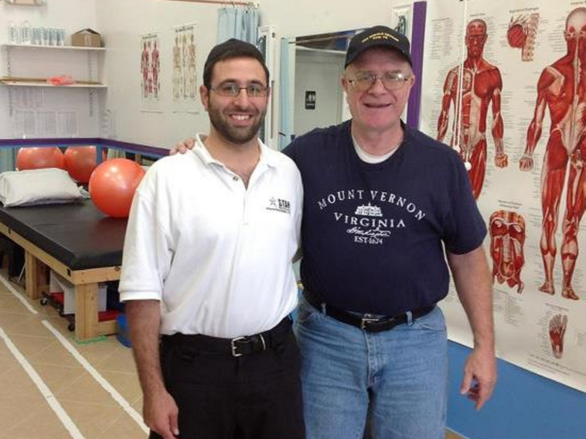
Now, I wanted to come to the main point of my update. As we drove, I couldn't help but think of and talk with Gail about the last three years and the monumental changes it has ushered into our lives, and the impact it has had.
As I did so, I was struck by several principles that have occurred with me that have helped me through the experience...and not only helped me get through it to this point, but also helped me come to grips with it and understand that the entire thing can and should be viewed in a positive light, despite the adversity, hardship, and impact.
Here are those principles I believe anyone who is facing or going through such an experience as a malingant cancer or other potentially fatal disease diagnosis, major, life-threatening surgery, resulting long stay in the hospital, resulting handicaps and the necessary rehabilitation efforts, and then the life altering aftermath can benefit from.
I am reminded of the story of Job (though I do not compare myself to him spiritually). Just that he was beset by significant difficulties, and unimaginable sorrowful events. But he did not falter, he continued forward in faith and with a positivie outlook. In the end, he made a remarkable statement that goes like this, "The Lord giveth and the Lord taketh away. Blessed by the name of the Lord!"
If you are not a believer, do not focus on the faith aspect of this (though I honestly believe it helps), rather, look at the concept. This individual of old was faced with unbelievable painful and difficult circumstances. He understood that things happen in life...even difficult things, and he found that there was a blessing in each...both the good and the difficult. For each of us it is certainly easy to see the blessing in the good, fun times with frends and loved ones are amazing and great and enjoyable, and a blessing. It is more difficult to see it in the hard times...but this does not mean that the "blessing" is not there, or that the blessing is not very beneficial to us. I believe that these six conditions or recommendations I have spoken of will help not only to realize the blessings of those difficult times, but to beneift from them...and maybe in ways that were not possible through any other means. Think on that for a minute.
It is certainly not like ten years ago I was thinking, "Oh, I can't wait to get a sacral chordoma and have surgeries that completely take me apart and put me back together again, and remove that cancerous tumor from my body!" No, it certainly was not like that, or that I prayed for it to come.
But it came anyway, and I can say now, almost three years after finding out about it, that the overall impact to me and those around me, even with the worry, the anxiousness, the concern, the pain, the discomfort and disabilities...that is has been a positive experience, and that I have been blessed as a result in my life to learn things about myself, and life, and about living that I may not have been able to learn any other way...so I can also, in my own way say, "Blessed by the name of the Lord!"
Thanks for reading, and I will continue to update my journal/blog here as I experinece more of this ongoing, life-long event.
Sincerely, and in Christ,
Jeff
Well, it's been seven months since I last wrote here in my Chordoma Journal.
Time passes quickly and I have been so blessed. I work full time and was accomodated at work in a very good fashion. I am able to walk without any assistance devices...it may not be the most steady, and certainly not with a lot of endurance or stamina...but I am walking and enjoying it. I have been able to establish a very good, probably 95% of the time regiment for my bowel/bladder disabilities that allows me to function fairly normally on a day to day basis with a good schedule and diet that works well fo me. I have seen three new grandchildren born and growing (that makes nine altogether now), and enjoy spending a lot of time on weekends with them. I hope and expect I will see more before all is said and done. I have a wonderful and loving, dear wife (we recently celebrated our 35th anniversary) and family that have been amazingly supportive and loving and gracious to me.
These are all great blessings and gifts from above for the which I am eternally grateful, and humbled. And I thank God in Heaven, my Savior Jesus Christ, my wife, and family, and so many friends for being so understanding and helpful to me. In the end, those very relationships right there are what counts in life. How we treat others, nuture them and our relationships with them, and how we help those around us. I pray I can be as helpful to others along my way, as so many have been to me.
Today, April 27th marks three years since my first surgery when they did all the surgery work (over 12 hours worth) to get ready for my second surgery, which followed three days later on April 30th, where my chordoma tumor, which included my entire sacrum was removed (another 18 hours). In that second suregery, they had a few complications...not surprisingly, as it is about as intrusive and as major a neuro and ortho surgery as it gets. As a result, I had to have a third surgery on May 11th, to actually put the strut, which was comprised of my left fibula bone from my leg which they broke into an angled strut attaching the end of my spine and all the titanium cage they built there to my two hip bones (another 12+ hours)
Dr. Rhines and his Chief Nurse Practioner, Gisella, along with Dr. Partick Garvey worked miracles with me. God bless them and their entire staffs for their amazing capabilities and skill, their compassion and caring ways, and for their skill...and their faith.
They are literally life savers to me...and I would trust my life to their care in an instant.
Those were days that went by in a haze and a blur, though there are some very specific things I remember about it. Then laying on my sides for the next six weeks, getting turned over every few hours...from one side to the other. All of those weeks, trying to let those wounds and injuries heal, and to let the bones start to fuse and stengthen. What a joy it was on Father's Day, when my son Jeff and his wife, Joelen surprised me by showing up there in Houston and coming to see me in the hospital. I wept like a baby...but not in mourning...in joy.
Then a few short weeks of rehab in the hospital, trying to get me ready for relase by getting me to stand (which was a significant undertaking in and of itself as the videos earlier in this journal attest), and then slowly walking around the floor with a walker and learning of my disabilities as they slowly undid the myriad of lines and tubes that were attache dto me and sustained me. Finally, just after the first of July, I was released and went to an apartment that we had graciously found in the Lutheran Faith House, which staff and congregation were so Christlike and gracious to Gail and I the whole time we were there, and where I would spend another three months with Dr. Abraham Lieberman in very intensive physical therapy. Those were hard, but exciting days. Physical therap[y of this nature hurts...simply put...and has to if you are going to make progress and be able to function as well as you possibly can. Gail encouraged and motivated me, Abraham Lieberman and the people around me there inspired me, and God in Heaven blessed me beyond what I deserved.
I am convinced that Dr. Lieberman and his unbelievable knowledge and understanding of the phhysical body, and his manners, was a HUGE part of why I made the progress I made, and anyone needing any form of spinal, amputee, or major phgysical therapy of that nature I would recommend him to. He was another life saver in this and someone I would literally trust my life to..
It was a hot summer there in Houston, and Gail and I got through it. My Aunt Esther and her family were such a strength. We were visited by several close frineds and family while there...always encouraging us and bolstering our faith. God bless Gail for her love, compassion, and understanding. I also would never have gotten through it as I have done without her.
Then, finally, in very late September, we drove home to Idaho. What a joy it was to drive the pickup myself! What a wonderful trip through the mountians in the early fall. How GREAT it was to get home and find the preparations that my son Jeff and his wife Jolene had made for us at our hoime, and to then have two of my wonderful granddaughters from my daughter Becki, Kyra and Kenna, visit and sit with me on the front porch rocker as I had prayed for and invisioned for so many months!
Now, here I am, three years after those events and on my way. No new cancer thus far. I do have the three very small spots on my hip bones, completely within the bone, which were already present when the surgeries were conducted. They have grown very little since. In September, we are scheduled, during my annual check up there ayt MD Anderson, to have them treated with stero-tactic proton radiation...which, if everything goes well, will either kill them, or retard them to the point that I will not have to worruy about them for the rest of my life. That sounds good.
Either way, each day is a blessing and simply must be taken advantage of. Here are some pictures of hapening with me and my family of late:
Wonderful experiences and I am glad to be able to share in all of them!
Now, this does not mean that there are not difficult or hard times. My Mom, age 87 years passed away in October of 2012. We had watched her for almost seven years, and she went into a care home when we went down to Houston for my surgery. Even in her failing health, she cared for and was very concerned about me and my health...and that of her entire family. Gail and I took her home to Texas from Idaho in my pickup truck, where she was buried next to my Dad. Then, a little over a month later, my dear brother Lee, age 60 years, passed away down in Texas. He was diagnosed with ALS (Lou Gehrig's Disease) in early 2012. He was always a great example to me as an older brother and a dear, close friend in our adult years. He left his wife Brenda of 40 years and his four kids and grandkids here on earth as he returned home to our Father in Heaven...and we were off to Texas again. When I went through my own cancer surgeries and ongoing ordeal, I presumed that I would certainly pass before him as at the time he was in excellent health. But we never know...and therefore must live to be prepared for out time when it comes. Lee certainly did.
So, I do not want to paint a picture of a completely idealic and perfect situation. It is not. Sometimes life is hard. I will be on pain meds the rest of my life and there are times when the pain is significant and bothersome. The various disabilites are not easily born...but the key is that I am here to bear them! And I know, from the last three years, that I can get through however many more years the good Lord has in store for me, and do it in a mostly enjoyable and positive manner which can be a blessing to me and those around me. And that's good enough for me, and in my view, what life is all about.
I am about 5 to 6 years away from retirement, and if things hang together, will be in a good position for Gail and I...and for my kids and grandkids...which is something I dearly want to be able to do, as my parents did for me.
So, I hope this finds you, whomever you are, wherever you may be, and whatever circumstance you find yourself in, in a position where you can see your own life and circumstances in as positive light as possible, and realize, even in travail, there are silver linings...there are tender mercies....there is so much to be gained, experienced and shared with others...which then makes those circumstances actual blessings in disguise. I hope you can all see that...I know I have come to do so.
I will write again, during or after my visit in Septemebr to MD Anderson, or should anything major come up.
God's speed, and His blessings to you all!
Jeff Head
Well, I am somewhat tardy on updatinbg this journal. I should have done it last fall after my visit to MD Anderson and the events associated with that trip...which I will catch up on in this entry.
It's hard tpo believe four years has passed. Reminds me of something someone said from Biblical times, "and our lives passed away as it were unto us a dream." Sometimese it feels sort of like that.
As it is, four years ago yesterday I had my first surgery wherein they opened me up in front and did a lot of preparation work for the 2nd surgery that would follow a few days later where they removed my sacrum, which was filled with a Chordoma cancer tumor. That first surgery prepared what they would call my patch, which is my right side abdonimal musles (the three-pack on that side) and it's covering skin and pushed it through to the back of my body with its blood supply to be used in the 2nd surgrey as the covering for the large wound that would be created by taking out my Sacrum. If left just to heal with scar tissue, there is a much higher likelihood of infection, so they intended to cover my large wound with my own tissue...and they did. And I had no infection set in as a result.
Hehehe...not too many people have tummy hair growing on their back side, but I have the distinct privelege of being a member of that club.
Anyhow, I remember only a little about the time in-between that surgery and my second surgery a few days later. That first one was like 12-14 hours. My second one would be 20 or more. I was kind of in a drug induced haze inbetween. Then, they were unable to finish everything with the second surgery, and I had to have a third, (about ten days later) which is where they harvested my fibula bone from my right leg, which they had cut through in preparation, and used it as a strut, breaking it and forming a "V" between the bottom of my spine and my two hip-bones so I would have enough structure to support bone fusion which would support me when I later walked.
Those days in the hospital were long...and my dear wife Gail (with whom I thankfully and gratefully celebrated our 36th wedding anniversary on the 25th of April) was there with me the entire time. From the 1st surgery, until I got out of the ICU after my 3rd surgery, 3 or more weeks later. Se only left my side to use the restroom and to eat. Se did not go to our apartment that we had rented until I was in my normal room. She literally was a major reason I lived through it I can tell you. Fellows...takecare of your wives and love them dearly. You never know what life may bring.
And now we are here, four years later. I went back to my job and was accomodated and continue to work full time...looking forward to my own retirment in another four years, which is the same amount of time I have been back now...so it is going to pass fast.
I can walk, though I do not have a lot of stamina, without any assisted device. I have gottent t work on my hobbies of 1/350 scale ship, and 1/72 scale aircraft model building which I really enjoy, and also try and do itth my grandkids when they can. I spend quite a bit of time on the internet, being involved in various military and conservative forums and activities which I also enjoy. I take my grandkids and my own grown kids to the movies as often as we can afford. LOL! Making up for lost time there because in my yyounger career, we rarely did that. Wish I had done more now, but certainly better late than never. I also get to spend a lot of time with Gail, which is the best time I spend.
So, to my trip to MD Anderson last fall.
We go every year for our "check-up." MD Anderson has a spine and brain tumor conference each year at MD Anderson sponsored by Dr. Rhinse and Gisela. I is very educational and a GREAT experience. Gail and I like to go during that time period and schedule my MRI, CT Scans, blood work and consultation each year at that time so we can get our check-up done, and so we can meet friends we have made in the MD Anderson Chrodoma community who also come to the conference. Usually we are there for about 3-4 days. It takes us 3 days to drive down, we spend some time with friends and relatives up around the Dallas area, go to Houston, and then spend 3-4 days driving back to Idaho. We are nomally gone a couple of weeks and so it also serves as a sort of "vacation," for Gail and I. I really look forward to those trips each year.
Last year, Dr. Rhines (my main surgeon and chordoma doctor, and probably the most knowledgable Chordoma Physician in the world, and an unbelievably talented Brain and Spine surgeon in addition to all of that) had determined that last year would be a good time to treat the three small spots/tumors I still have in my hip bones. They are very small, very slow growing and no threat currently, but eventually they will grow into the same type of tumor they had to remove. So, if treating them now can remove them or slow them down enough, I will not be worrying about them in this life.
The treatment they use is called Stereotactic Body Radiation Therapy or SBRT. My radiation Dr. is a very sharp lady, Dr. Macaleer. She is a vey, very intelligent Dr., and also very good with patients...and she has an excellent team.
SBRT is a high-tech, 3D process where they place you in a pre-arranged and pre-programmed device, then use seven beams of radiation to treat you. Each beam delivers a non-threatening amount of radiation, but all seven come together to give a very ample radiation treatment to the tumor itself without impacting surrounding tissue. They program the location of the tumor into the machine relative to your body and calibration poiints they mark on you.
They then basically place you in some epoxy/resin that covers the lower half of your body as you lay in it, and then pull a vacuum on that and allow it to form a cast of sorts. That then becomes a mold for the actual treatment day which follows about a week to ten days later. During the intial simulation day, they then also move you around a bit to get you and what will be your ultimate mold, initially set up in the system, and they account for all sorts of variables, including your respiration in the program/plan they develop...which of course uses your MRI and CT Scans to program the location of the tumors. It is a very exacting science.
Then, a week to ten days later, you spend from three to five days coming in and getting the treatments according to that plan they make, once a day until finished. Mine was going to be 3 or 4 days.
For me, the simulation came off pretty well. There was a little pain during the procedure when they pulled the vacuum (because you absolutely cannot move while this is happening), but it was not too bad.
Then, when we came back a week later, they had the mold all ready for me and I climbed in, having made sure I had taken some of my normal pain meds (methadone) beforehand just to be sure.
The mold is sort of like a hard fiber glass material that has been formed to the lower portion of your body. Once in for that 1st treatment, they again pulled the vacuum by placing a thick mylar type substance over the top half of my body and then sucked out all of the air. They do this before beginnning the treatment so you will not move.
But for me, the problem was, this time, it seamed that the vacuum for the tretment was harder than what had been used during the simulation and it caused my back to be pressed harder into the mold. Well, I have a lot of titanium in my back and all I can figure is that it pulled that down onto a nerve of some type because right at the last it began hurting very badly. I hoped it might fade and tried to sit still (and you have to remain still the 90 minutes for each treatment), but I simply could not do so. I was squirming around (and that was not very much because of the mold) to try and find some position a little more confortable. But my small amount of movement was too much for the procedure and we had to stop.
They tried to give me Fentanyl (a strong pain med) to relieve it and wait for an hour or so to try again...but it did not help. So, we came in the next day and they tried Oxycontin (a real heavy duty pain med)...but that did not help either. Just too much pain for me to be able to handle. So, Dr. Macaleer decided to put it off for another year (this year now) and come back in 2014. This next time they intend to give me a general sedative and put me under for the procedure. So, we will see how that goes.
Anyhow, it was a good trip just the same. My condition is very good. Very good bone fusion along my struts and all around the titanium. This is critical for the structure to be able to hold for the long term.
Also, absolutely no new tumors at this point and that is also extremely good.
Other than all of this...the life after 2010 continues. There are good days, and sometimes not so good days. But all in all I am very happy and thankful to have been blessed to get through this and to have so many tender mercies form God in Heaven that have helped me do so, not the least of which have been Gail, Dr. Rhines and Gisela.
FYI, on a closing note. It looks like I will be directly impacted by ther Affordable Health Care Act (aka Obama Care). Apparently, as it is currently planned, institutions like MD Anderson, the Mayo Clinic, Bethesda, etc. will not be primary care givers under Obama Care for long distance treatment. This means essentially that the insurance will not cover much if any of it. It means people like myself will have to look to local hospitals and care facilities to handle our condition. If so, then it will be a significant issue.
Here in Idaho, when confornted with my condition in 2009, the best Health Care Facility in the state urged my to go somewhere like MD Andersson because they were not prepared to treat it.
To date my insurance has handled this very, very well. It has not covered everything and we had to dip into our retirment for some of it, but it covered the vast majority, and it did so at the absolute best place in the world to treat it. Seems rediculous to me that such institutions would be denied, and I hope that they get together and change this ludicrous decision. As I say, it will have a direct impact on me and my long term care as a cancer survivor.
But...as with all things...ultimately it will be in God in Heaven's hands. I know He knows of and cares for me personally, as He does all of His childern....whether we believe it or not, or whether we agree with His decisions or not. If He wants me home, no power on earth will keep it from happening. Conversely, if He wants me to stay on this earth, nothing can prevent that from occurring. I am happy for the time I have, and grateful to be able to spend it with my loved ones.
I will follow up this Fall on how things go and not make folks wait a year!
In Christ,
Jeff Head
Well, I am very late entering this information and making this entry.
In early August we traveled to MD Anderson in Houston for our annual pilgrimage and to accomplish three things.
We stopped in Amarillo and ate with a close friend, Caylin, there who is retired US Army EOD. We then stopped in the Sanger area to spend time with Brenda, my late oldest brother's wife who lives
out on the "place," where we grew up. It was a great visit, but short-lived because we had to get on down to Houston.
We arrived in Houston and over the next several days went through all of the appointments associated with my checkup. Blood samples, MRI, CT scans, x-rays, preparation for the radiation
treatment, and finally consultations with Dr. Rhines.
While doing this, on August 12, we took the time to visit it USS Texas, the historic dreadnought class battleship that served in both World War I and World War II and which is not a museum at the San
Jacinto State battlefield park. I had last visited it as a child when my Dad took us there in the 1960s. They have significantly refurbished her since that time and it was a very good visit. Gail took some pictures and a video of me climbing around on it (very slowly and carefully) in the 1000 degree heat. Hehehe...she wisely stayed in the visitor center where it was cool. There was no air conditioning on the ship where I was looking around.
The consultations went very well. could not have been a better report. The bone fusion in my spine and around the two struts made up of my left fibula bone placed where my sacrum used to be, or
as good as they can be...better than expected. The small tumors of Chordoma in my ilium continue to grow slowly, but are reaching a size now where the radiation treatment proposed by Dr. Rhines
is warranted. One area that they had thought was scar tissue since my surgeries has grown so they believe it in fact is a 4th small tumor and will be treated with the rest.
After this good news, we attended the conference, which itself was great. I always love listening to the several seminars during the day. Always good information...[particularly now over the years seeing new information and developments. Particularly good was seeing our friends. The Shaws, Mohammed and his wife and children (Mohammed had the same complete sacrectomy surgery I had a year and a half after me), and so many others, including Dr. Garvey (my bone/plastics Dr. for the surgeries), Dr. Fu (the rehab Dr. at MD Anderson who referred me to TIER), and Dr. Lieberman (the Phd Rehab Dr. who worked such wonders with me a TIER).
Also, we saw Mrs. Amiee and her mother. They were at the conference to accept an award on behalf of our good friend, Neil Aimee, who had passed away a month before the conference and whom we miss. I was asked to give a tribute to Neil at the conference and I was proud and happy to do so. Neil helped me a lot five years earlier when I was just being operated on and coming to terms with the disabilities and life after the surgeries. We talked each month thereafter and several of the times called him I was getting a Chicken Sandwich at McDonalds for lunch. He used to always joke with me about that. He told me towards the end that if he got to the Pearly Gates before me, he would have a Heavenly Chicken Sandwich waiting for me at the true Golden Arches when I arrived. I know he will...and though I miss him, I know, like with my parents and brothers and grandparents and others who have gone before, that I will see him again in a place without pain and suffering.
I will certainly not hurry that, because it is given to God to make such decisions...but I do not fear that day and look forward to it in God's own time.
After the conference we traveled back up to the Denton, TX area to spend the week before the radiation treatment. We had a wonderful time just taking it easy on the ranch and spending the time
visiting friends we have in the area (Gail and I lived around Denton for a total of 6-7 years during our married life). Gail and Brenda got to spend a lot of time together and accomplished a lot. We also were blessed to eat dinner with and spend several hours with our good friends, Trey and Patty Martino. Trey has been a life-long friend, and is as close to a brother to me as anyone could be who is not actually a blood brother. Through our mutual testimonies of Jesus Christ and our many years of relations and memories...the difference is virtually non-existent.
Then, it was back to Houston and the radiation treatment. Stereo tactic radiation is a process where they use a 3-D, highly computerized equipment to generate five beams of radiation and then have them converge at the tumor sites to give a large dose of radiation to the tumor, but to do so in such a way that the individual beams do not do appreciable damage to other tissue they pass through. They take the week between the preparation appointment (which they call a simulation) and the actual procedure.
We had tried this the year before...but it was unsuccessful because when they make the mold for you to lie in, they then pull a significant vacuum on you as you lay under thick, clear Mylar, so you will not move. That pressed my back into the mold they had made and in my case caused a lot of neuropathic pain as nerves were pushed against the titanium in my back.
So this year they planned to put me under each day for the procedure. This involved starting a little earlier and having an anesthesiologist team there to put me under...remaining under while they did the procedure for two to two-and-a-half hours, and then spending another hour to hour-and-a-half being brought back out of the "sleep," in recovery. Well, you cannot eat for twelve hours before the procedure, and when you add the 5 hours that all of that took, you end up with about eight hours to eat between procedures.
So, we would get done, go eat a light meal, and then about four hours later, eat a heavier meal, before going to sleep and coming in for the next procedure.
At the Radiation center we sat with and got to know numerous people who were coming in for various radiation treatments. Most of them were on 28-30 day treatment plans where they came in for 20-30 minutes of treatment each time. They would all go in and then come out again and leave while we waited, and by the time we got done, they were all gone. But we only had five treatments to do, where they had 30 or so. It was a good experience being there with them....getting to know them and their stories as we shared our own...and then praying for them each as they went through their procedures to treat their various cancers.
In such circumstances other differences pale and you come to know and love people without delving into the things that might otherwise divide you.
As we came in Wednesday for my third treatment, I have to say I was feeling VERY badly. Everyone responds a little differently to radiation. Some are more susceptible than others. Stereo tactic radiation, though it avoids too heavy a dose to vital areas, still deposits a very massive dose of radiation to the targeted areas. Your body does not like that. For everyone, radiation is a poison. Specific types have been shown to be more effective against different cancers...like with Chemo. But, like Chemo, they are poisonous to the system. I was once told, while my brother Greg was going through his fight with Lymphoma, that radiation and chemo are poisons that can and will kill you. The treatment plan is designed so that hopefully they kill or impeded the cancer before they do the same to you.
Anyhow, by the third day...for whatever reason...I was one sick fellow.
Dr. Macaleer, who is very personable and a very smart and talented lady, saw me there and asked how I felt. I told her I was afraid that the next day they may have to wheel me in on a gurney. She said, "Oh no, that wont do...we will take care of that." And they gave me some steroids in my IV that day that are specifically designed to help fight the side effects of radiation. I have to say...they worked! The next day I walked in under my own power feeling as good as I have felt in years.
But steroids also have side effects as they explained to me. You cannot take them too long, and they can make you just as sick in the end. They have treatment and impact curves and they try to design the steroid treatment to hit you with its positive effects as your system is experiencing negative effects from the radiation. Then they slowly take you off the steroids in the hope that its negative effects are less burdensome as they wind down, and the steroid's positive effects offset the negative effects of the radiation. Pretty interesting statistical and mathematical models involved in that.
Anyhow, I was able to get through all five days of treatment and still not feel too terrible from the steroids. Then, we headed home and had a wonderful trip back to Idaho.
One of the best things about these trips for me is that they allow me to spend two to three weeks with my dear, wonderful wife and sweetheart, Gail. In that way, despite the medical nature of it all, it is a vacation to me. Gail has been a strength, comfort, care-giver, sweetheart, and example and pillar to me through all of this. Not a day goes by where I do not emotionally thank my Father in Heaven for bringing her into my life 37 years ago, and for her goodness, kindness, and wisdom.
Now, it is December 23, 2014.
On the 20th of December I marked my fiver year anniversary since being diagnosed with Sacral Chordoma.
In February, we will have an MRI here in Idaho to send down to MD Anderson where they will look at the results and see what impact the radiation treatment had on he spots in my ilium (hip bones). It takes a good six months for any swelling or impact of the radiation to surrounding tissue to wear off enough so they can really asses what has happened with each of the tumors.
In the last three months I have had a couple of pretty severe infections. One was a urinary tract infection (which I had not had before) and the other was an infection in one of my teeth. I learned something new in each case.
Because of the long term pain medication I am on (methadone in my case) my normal ability to feel the results of such infections is masked. This is pretty academic actually, but I did not think on it before now. Anyway, because of this, by the time the infection became bad enough for me to feel it, it had advanced significantly and was pretty bad. They have both been treated an I am doing a lot better...but in the future, at the slightest swelling of a lymph-node or feeling in anyway out of sorts that comes with such infections, I will go into the Dr. to get checked out.
Our local Dr., Dr. McGuffy, who is a wonderful general, family practice Dr. has always chided me a bit for not coming in often enough. At our last meeting I told her she may get tired of seeing me and she said...no problem, you should have been coming in more often like I told you! LOL!
So, there's the latest update...stretching back four months! I will update again when we know th results of the February MRI!
'Til then, a Blessed and Merry Christmas and Holiday Season to all!
...and the very best of the New Year for 2015 to you and yours!
In Christ,
Jeff Head
Well, Gail and I are preparing to take our trip down to Houston and MD Anderson this year. I alway slook forward to it, as I have said in the past. it's like a little vacation for me to be with Gail.
It will conicide with exactly five years since I left MD Anderson after all of the surgreries, the hospitalization, and the intensive rehab I went through in 2010 between April and September that year. My how time flies!
It will also, as usual, overlap with the wondderful Conference they hold down there each year for Spine Tunor patients. We are looking forward to seeing our friends.
This time I go with some concern. I have reached a point in my living with this disease where I understand it, and can feel its impact very well. It has become a part of my day to day life and I am comfortable with, and copying well with the disabilities it has caused.
As a result I can notice changes. For the last couple of months I feel like things are changing. My bowel and bladder functions are not as regular or as comfortable as they had been...or should be. In addition, I am experiencing quite a bit more pain, even over the methadone I am taking, particularly when sleeping at night, in my lower back, particularly on my right side and at the top of my hip bone.
I am concerned thsat these things denote a change in the disease, and potentially either new tumors, or an increased growth rate of the one I have had since day one.
We will find out at the end of September.
Even though having these concerns...I am also at peace with it. I have been richly blessed to have overcome the more dire cicumstances I faced in late 2009 and early 2010...with the help of excellent health care professionals, with the help, love and care of my dear wife, Gail (who to me, is in reality an angle sent down from Heaven), with the love of my kids and grankids, of other family and so many friends. Most especially through the blessings and love of God in Heaven and His Son Jesus Christ. I know their hand has been in all of this...an it is their will that is being done here.
When I went down to Houston in 2010, we had a total of six grandkids. Here in early September 2015, we will see our 11th born. Five more in five years. It has been great! As has been seing them all grow.
We shall see what the Lord has in store. Whatever the results of the tests in September, I will continue to seek God's will and follow it in this fight, and in my life. I just wanted to pass on the information, and the feelings I am having, and let everyone know it's okay. We all go through phases in our experiences in life, and all of them...even the difficult and hard ones...can beneift us and those around us if we simply strive to keep our heads above water.
I will update this once we know the results of this trip in September.
God's speed.
Jeff Head
I am sorry my report has been so delayed. Nobody and no circumstance to blame except my own delays.
However, we had a wonderful trip to MD ANderson in September (2015).
I went throgh the battery of tests like normal, and was seriously...as I mentioned in my last report...concerend about what they might find because of some of the pain I had been experiencing.
As it turned out, the MRI and CT Scans showed extrordinarily good news.
The radiation treatments from the year before, despie the difficulty associated with them at the time, had apparently been as successful as we could have hoped for. All of the areas treated were either gone, or completely inert and, according to Dr. Rhines, looked dead.
As usual Dr. Rhines and Gizella were willing to talk with us for as long as necessary. It means he runs late sometimes, but it also means once you are with him you will get to spend whatever time necessary for his consultation.
So I asked him about the additional pain.
He looked at me and we discussed things and as near as we can determine,. it is probably related to ongoing issues I have wth bowl and bladder management...particularly the former. With all of my "S" nerve roots gone, I have no feeling or automatic control over those things. In addition to having to learn to manually stimulate and deal with those issues, I have had to really regulate my diet and ensure that I have enough fiber...and even then have to regularly take supplements to ensure my stool is not to hard. When it is a little too hard...or when there is a lot coming through, because of the operations and the way my internals were juggled around...I can easily feel pain associated with my bowels and intestines in those circumstances.
So, the idea is to work on that. Over the last few months I have and it has helped some...but not altogther. I still have pain, particularly at night.
There was one note of caution that we are about to check on in addition to this.
At the top of one of the scans, Dr. Rhines saw an anomaly that he wants me to check on. In the vertabrae just above my "hardware" he believes there may be something and he wants me to get a new MRI of that area specifically (it was right on the edge of the one I had), here in February to ensure it is not a new tumor.
I have an appointment with my doctore here in Emmett on February 17th to set that up at St. Lukes hospital nearby.
We shall see what it is...but if it is more Chordoma...in the bone they are very slow growing and I have no doubts but that there is every chance and hope that they will be able to deal with it.
I also have to say that the Conference this year was simply excellent. As I have said before, we go in the fall of each year for my checkups in order to coincide with the MD Anderson Brain and Spine Tumor conference each year. It is organized by Dr. Rhines, Gisella and their staff and a bunch of us who know each other as Dr. Rhine's Chordoma patients meet there each year.
Great information, great comradery, and just a very worthwhile thing for us.
Then, on the way back to Idaho, we took the shortcut though Minot, ND.
Our second duaghter and her husband live there. Rachel is in her mid-30s now and had never been able to have children. The year before, as she was preparing to come with Chad to visit us for Christmas, a young man lost control of his vehicle outside a mall Rachel was shopping at, and he crashed into four vehicles in the mall parking lot and ultimately hit one that was pushed into Rachel and knocked her into a building wall. She was blessed that although she was seriously cut and bruised, and hit her head on that wall, she had no permanent damage and her skull was not fractured. For whatever reason, then, after visiting us, we got a call early last year informing us that she was pregnant!. It was a great blessing and a true miracle.
well, she and Chad had their son, Myles, shortly before we went to Houston and so on the way back we visited them and the new baby. It was GREAT!
Another blessing associated with my survuval thus far...getting to see all of these new grandchilred. Nyles is now our eleventh.
I will update this report again after we find out the results from the upcoming MRI and as we prepare for our Fall 2016 trip to MD Anderson.
Once again, heartfelt and humble thanks to all of those who have prayed for us, had us in your thoughts, and who have helped us as we have gone through these experieces.
As always I thank my dear and loving wife Gail. We will have been married 38 years this April and she has been the greatest blessing of my entire life...and my best friend. Also, thanks to a loving and merciful God in Heaven and His Son Jesus Crhist. This experience has been difficult...but it has also been a blessings, and they have taught me, and humbled me, so that I could see it for the blessing it is, despite whatever difficulty.
God's best to anyone and everyone reading this..
Jeff Head
I needed to update my journal here now that we got the initial results back from the MRIs, and also with respect to some medication troubles I have had that have been pretty onerous.
First, the meds.
I had been having more pain in my back and we talked with our excellent local Dr. about whether it was me getting acclimated to the methadone I have been taking or whether there were issues in my back. We decided to up the dose in any case.
Turns out that all methadone is not created equal. Apparently, different manufacturers use different fillers and some different methodologies that can impact individuals. I happen to be sensitive to this apparently and it really knocked me for a loop. Was like going into withdrawal. I was very sick. Sickest feelings I can remember having. Felt like I was dying.
We ultimately got back to the original manufacturer and things started getting better.
Then I had a UTI And the mediation was not working and some of the other medication they gave me for anxiety all worked together to cause my body to get too much methadone and I got REALLY sick all over again. Hsd to be in the hospital twice.
We hope now that is being fixed fixed and may be making some progress...but it has been a very hard last 4-6 weeks.
The MRI scans did come back here in Boise and showed that I had new tumors in my lumbar spine. We sent these down to MD Anderson and they reviewed them and agreed. Several small tumors, but one that is pressing up against my spinal chord.
We are scheduled now to go down to Houston in late May for a bunch of tests and then consultation.
I expect they will want to irradiate the very small ones, but will probably have to operate on the one. I expect that will be scheduled for late summer or early fall.
This was not good news...but I have been stable and in better than expected shape for the last 6 years and so you have to take what comes and trust in the Lord. That is what I am going to continue to do.
Please remember us in your prayers. As always, Gail has been an angel through all of this. She is taking care of her Dad (her Dad and Mom moved into a small apartment we built onto our house) and me. I love her so.
April 29, 2016
First of all, the medication issues and how deathly sick they made me ghave, gratefully been addressed. Ultimately, I got off of methadone and am now on Fintynal. Apparently, another issues with Methadone (and perhaps all opiods...I do not know) is that if you are on a long term matineance dose like I was, your body becomes acclimated to it to such an extent that your body's effective dose is what you are getting and anything much below or above theat become toxic to you.
But that has now been addressed.
Still I was feeling more pains in different places so we got a CT scan last week and sent it down to MD Anderson. The Dr.s here indicate that I now have a couple of lesions/tumors in my liver which also may be metasticized.
Clearly this is not good medical news...and we will see what the folks at MD Anderson have to say about that too. Right now we plan to be down there all next week...byt will be willing to stay longer if they need to look at more.
All of this is in God's hands. I trust him with all my heart and know His will is for the best. HGOd in Heaven is the Father of us all. JEsus Christ is Lord and Redeemer of us all. They love us...completely. We may not understand what we have to pass throuygh in this life...but they do...and they simply have sent us here to learn, and to choose. Choose to do good. Choose to find and follow them. Some paths are thorny as the song, which I love, "BE still my Soul," indicates. But our paths lead to jouyous ends f we will simly turn to them.
I bear witness of this.
I will update later after we have a chance to find out what we learn in HOuston.
May 21, 2016
Well, we are back home and iot has been a difficult, and yet so wonderful experience.
We found upon arrival that some of the pain I had been experiencing was dure to two vertebrae in my thoracic spine which were putting pressure on the spinal chord which could paralyuze me and they needed quick surgery. Dr. Rhines arranged this and now I have more titanium in myu Thoraci\c spind and some repaired vertebrae. MAybe it is because I am older, or just generally wearker now at 60 years old, but the surgery and hospitilization was just difficult. But it also relieved the pressure and probably saved me from being paralyzed to one extent or another.
At the same time, I had six or eight more small tumors that Dr. McCaleer and Dr. Rhines decided to treat with more porton radiation so I had to heal from the surgery and so we stayed another 3-4 weeks at the Faith HOuse. We made such wonderful acquantences there of the good Christian people waiting for their cvarious cancer treatments. HAving praerys with them and bearing our winess of Christ and God to one another was so helpful.
In addition, Wylie Shaw, our good friend and comatritot in Chordoma for the lasyt 7 years actually flew in from New Mexico to be with us as I went through the surgery. I am humbled by his and his wife's support and love for us.It makes me weep and I thank God for His tender mercy in having friends like this.
In the end, we had the radiation tretment and one day in particular was harder than any I had had to date.I lierally came out of the radioation treatment and had to be take to the ER because I began trhowing up and just conuldn't stop. Every 20 minutes or so for foive hours I just had to throw up whether something was there or not.
They finally got it under control, and after that the rest of the treatments went fine.
We left Houston and returned to Idaho via Noth Dakotah so we could see our newest Grand baby, Myles. He is one BIG BOY for less than a year old and is walkingg all around now and really just started.
What another tender mercy blessing from God to see that.
The people at MD ANderson want me to start a Gleavic chemo tretment that is kind of in a test pahse for Chiordoma. It was designedd for Lukimia but has shown soe hope for Chiordoma in a few cases.
Mohamed, hom we were able to see in Houson advisd against itg. He has aleady tried it and it mnade hin deathl sick. So Gail and I read upop on it. At best i mnight retard tgibgs for up to nine months and then our body apparently gets olerant to it and it is likly that you will feel very sick hile you are on it. So...I prayed about it a liot. Read about it, and flet like the good Lord wanted m to decline...so I did.
We have pretty much decided to allow the disease at this point to move forward while we monitor it and treat those things that they can help.
Thos probably means that thins will take their course...but we shall see. With God all htings are possible and if He should want me home, I do not fear coming home and doing Hos work on that siode of the veil.
If things continue and deteriorate, it will mean I will need to do a medical retirment. We are a little early for that finaincially, but we will place i in God's ahnds and see of family and friends can help where they can.
In the meant time (it is now November 2, 2016, we found out this last weekend that number 12 granchild is coing! Jeff and Joelen are epxecting number four! Just another blessing and tender mercy.
Now Novmeber 2, 2016
Well, we took our medical retirement. They found new tumrs in my liver, in various places in my back, in several locations under the skin on my breast, on my arms, and elsewhere. They pronounced me terminal and we got all of our finaincial things together and are now medically retired and have things set up for Gail.
I decided to now do the special directed chemotherapy they advised. It was experimental and everyone I knew who tried it got horrible ill...and its best prognosis was to give you an extra nine months. I also decided not to do any more major surgeries or radiation.
Ath this point it is clear they cannot cure it, and I believe god in HEaven will bring me home when He is ready. Apparently He is not ready yet.
They expected a few months last fall, and it has been a year now. I have hd to increase my pain meds, but am still driving, doing things with the family and the grandkids, and doing geneology work for our church. Also building models.
I have put it in God's Hands and am confortable with that. In hHis time He will call me home, and I do not fear that. Please pray for our family, particularly for Gail. she is a strong woman and has GREAT faith...when the time comes I will miss her and just want her to not try and do too much.
I also wrote my Life History. One of our granddaughters asked me t do so, and so I did.
Anyone can get the free PDF eBook here:
If something more comes up, and I need to write here I will. There have been many special tender mercies from God for Gail and I and our family...and miracles. I will write of any more that occur.
Otherwise, God bless everyone who has prayed for us, heled us, shonw us kindness and understanding, and been our freinds and fellow soujorners in this. I pray His blessing on ech of you ten fold.
In faith, and in Christ,
Jeff Head
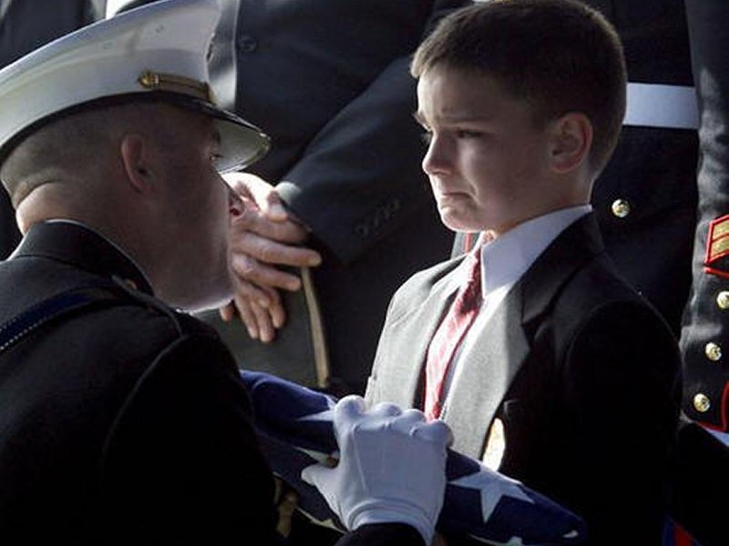
A willingness to express these sentiments as a people, and to live according to them, is what produced our heavenly inspired Constitution and allowed us to prosper accordingly these many years.
We depart from it at the peril of our liberty, and ultimately at the peril of our very life.
|


FINE ALL-AMERICAN, LIBERTY ORIENTED BOOKS AUTHORED BY JEFF HEAD
 Dragon's Fury - World War Against America and the West: Following great success in the War on Terror, politicians and analysts alike thought that future global conflict was impossible...but they were wrong. Journey into a possible future where Islamic terrorists sharpen their horrific skills & ally with Red China. In such a future, can the U.S. & western civilization survive? |
 The Stand at Klamatjh Falls: How rural western farmers and their supporters stood up to entrenched environmentalism, activist judges, and agencies of the Federal Government in southwestern Oregon...and prevailed. |
CLICK HERE TO RETURN TO:
Site, material, & designs Copyright © 2008-2009 by Jeff Head, All Rights Reserved
This site is not in any manner associted with, or connected to, any political party or candidate.